晶體固體的結構
📌 本章要解決的核心問題
第 2 章描述了原子如何鍵結。本章回答下一個層次的問題：這些鍵結的原子如何在三維空間中排列？為什麼銅、鋁、金都採用同一種排列（FCC）而鐵在 912°C 會突然改變排列？X 光如何「看見」肉眼無法觀察的原子排列？本章建立晶體學的完整語言——從晶胞、Miller 指數到 Bragg 定律——是理解塑性變形、擴散、相變化等後續所有材料行為的幾何基礎。
🔑 關鍵概念（10 條）
- 晶體 vs 非晶體：晶體有長程三維週期性排列；非晶體（amorphous）僅有短程有序
- 單位晶胞（unit cell）：晶體結構的最小重複單元，由六個晶格參數定義
- FCC（面心立方）：原子在頂點和面心，$n=4$，APF = 0.74——銅、鋁、金、鎳
- BCC（體心立方）：原子在頂點和中心，$n=2$，APF = 0.68——鐵（室溫）、鎢、鉻
- HCP（六方最密堆積）：底面六方排列，$n=6$，APF = 0.74——鎂、鈦、鋅
- 原子堆積因子（APF）：晶胞內原子體積／晶胞體積——FCC/HCP 均為 0.74，BCC 為 0.68
- Miller 指數：$(hkl)$ 表示晶面（倒截距法），$[uvw]$ 表示晶向——晶體學的通用語言
- 多晶性（polymorphism）：同一材料可有多種晶體結構——鐵的 BCC ↔ FCC 是鋼鐵熱處理的基礎
- 最密堆積：FCC（ABCABC…）和 HCP（ABAB…）——APF 相同但塑性行為不同
- Bragg 定律：$n\lambda = 2d\sin\theta$——X 光繞射決定晶體結構的基石
🧭 本章推理地圖
- 原子在鍵結與幾何限制下尋找低能排列（§3.1）→ 形成具有長程週期性的晶體（§3.2）。
- 用晶格、基底及單位晶胞描述週期性（§3.2–§3.3）→ 計算配位數、堆積因子與理論密度（§3.4–§3.5）。
- FCC、BCC、HCP 的排列不同（§3.4、§3.12）→ 用晶向、晶面及 Miller 指數指出方向（§3.8–§3.11）。
- 原子排列具有方向性（§3.9–§3.12）→ 單晶呈現各向異性（§3.13、§3.15）；多晶取向分布決定巨觀行為（§3.14）。
- 不同晶面間距產生不同 X 光繞射條件（§3.10、§3.16）→ 由 Bragg 定律反推出晶體結構（§3.16）。
3.1 導論（Introduction）
第 2 章討論了原子之間的鍵結——這些鍵結由個別原子的電子結構決定。本章進入材料結構的下一個層次：原子在固態中的空間排列方式。在此架構下，我們引入晶性（crystallinity）和非晶性（noncrystallinity）的概念。對於晶體固體，結構以單位晶胞（unit cell）來描述——這是具有完整對稱性的最小重複單元。
金屬中最常見的三種晶體結構——FCC、BCC、HCP——將在本章詳細介紹。我們也建立一套用於表示晶體學點、方向和平面的通用標記系統（Miller 指數），這套系統是材料科學家溝通晶體結構的「語言」。本章最後討論 X 光繞射技術，它利用晶體中原子排列的週期性來「看見」原子尺度的結構。
後續章節將擴展這些概念：第 12 章討論陶瓷的晶體結構（涉及兩種以上離子的排列），第 14 章則涵蓋高分子的晶體結構（分子鏈的折疊和排列）。
如果將材料科學比喻為一棟建築，Ch2（原子鍵結）是地基——定義了「磚塊」之間的黏合劑。Ch3（晶體結構）則是一樓的結構框架——定義了磚塊如何排列成牆。沒有這一章，後面所有的「裝修」（缺陷 Ch4、擴散 Ch5、力學 Ch6–8）都無從談起。
為什麼長程有序會改變材料行為？
晶體中的週期排列讓原子環境以固定規律重複，因此電子波、晶格振動與 X 光會發生具有選擇性的干涉。能帶、熱傳與繞射峰都與此週期性有關。若排列缺乏長程週期，材料仍可能有相同局部鍵結，卻不會產生相同的平移對稱與銳利繞射條件。
晶體結構也限制原子可如何移動。密排方向通常對應較短的晶格平移與較低差排能量；間隙大小決定小原子能否進入；晶面間距影響繞射與劈裂。這些都說明晶體學不是單純描述外形，而是把原子幾何轉成力學、擴散與量測行為的共同語言。
理想晶體與真實材料
本章先假設原子位置無限週期重複，建立理想晶格。真實晶體只有有限尺寸，並含表面、晶界、空位、差排、溶質與熱振動。理想模型提供基準：只有先知道完美結構應有的密度、繞射峰與對稱性，才能把實驗偏差解讀為缺陷、應變或多相組織。
晶體、晶粒與零件不可混為一談。單一晶粒內可具有連續晶格方向；多晶零件由許多取向不同的晶粒組成；一個零件還可能含數個晶相。描述結構時應說清楚談的是晶格型式、單一晶粒取向、晶粒集合，還是整個材料的相組成。
尺度也要保持一致：晶格常數約為十分之幾奈米，晶粒常為微米級，試片則為毫米以上。晶胞描述原子週期，不能直接取代晶粒形貌；顯微照片中的晶粒邊界也不是單一晶胞的輪廓。每向上一個尺度，都會出現新的結構變數與平均化問題。
3.2 基本概念（Fundamental Concepts）
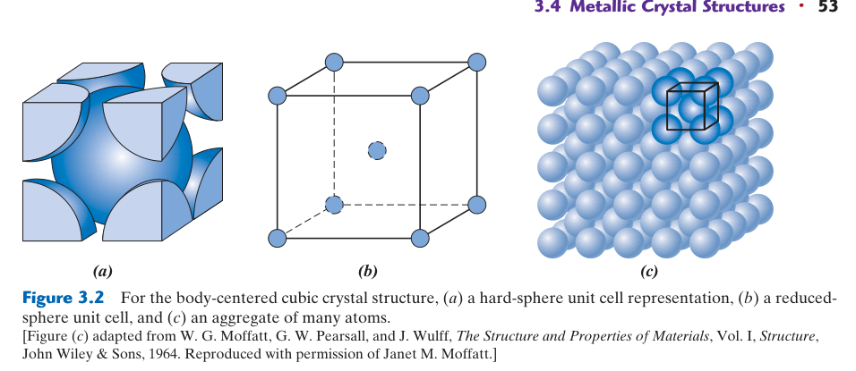
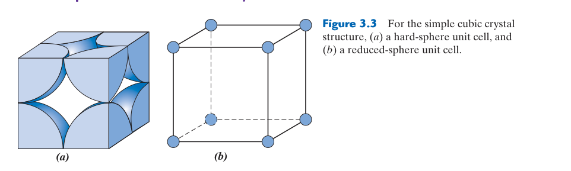
晶體材料（crystalline material）中的原子在長距離上以重複的三維模式排列——每個原子都與其最近鄰原子以特定鍵角和鍵長鍵結。所有金屬、許多陶瓷材料和某些高分子在正常凝固條件下形成晶體結構。不結晶的材料則稱為非晶體（noncrystalline 或 amorphous），將在第 3.17 節討論。
描述晶體結構時，原子（或離子）被視為具有明確直徑的硬球（hard sphere），最近鄰原子彼此接觸——這稱為原子硬球模型（atomic hard-sphere model）。此模型雖然簡化了真實的電子雲交互作用，但極其有效地解釋了金屬的密度、堆積效率和滑移行為。在本模型中，代表最近鄰原子的球體互相接觸，而次近鄰原子之間則有空隙。
晶格（lattice）在此語境中指的是與原子位置（或球心）重合的三維點陣列。區分兩個概念很重要：晶體結構 = 原子（或離子）的實際空間排列；晶格 = 這些位置的幾何骨架（具有平移對稱性的點陣列）。同一個晶格上可以放置不同的原子（或原子團），產生不同的晶體結構。
晶體結構中的原子排列決定了材料的幾乎所有重要性質——密度、彈性模數的各向異性、滑移系統（第 7 章）、以及擴散路徑（第 5 章）。理解原子排列是理解材料行為的前提。
初學者常混淆這兩個術語。晶格是數學上的點陣列（幾何骨架）；晶體結構是將真實原子放在這些點上。例如：NaCl 的晶體結構是 Na⁺ 和 Cl⁻ 交替排列在 FCC 晶格上——但 NaCl 本身不是 FCC 結構（因為有兩種原子），它的晶格是 FCC。
晶格＋基底＝晶體結構
晶體結構 = 晶格 + 基底（crystal structure = lattice + basis）。
晶格（lattice）是描述平移對稱的數學點陣——它告訴你「哪些位置會週期性重複」，每個格點在幾何環境上完全等價。晶格本身只是位置的骨架，不涉及原子種類、數量或鍵結方式。
基底（basis）則是在每個晶格點上放置的一組原子——它告訴你「每個晶格點上放什麼原子、幾個原子、相對位置如何」。將同一基底按照晶格平移向量在三維空間中重複，才得到實際的晶體結構。
舉例來說：單原子 FCC 金屬可用 FCC 晶格加上「一個原子」的基底來描述；具有多種原子的化合物則需要更複雜的基底（例如每個格點放置一組離子對或分子團）。
為什麼不能把晶格點直接等同於原子？因為晶格點只是幾何位置，它本身沒有說明以下關鍵資訊：
- 這個位置上是矽原子還是碳原子？
- 是一顆原子還是一組原子？原子半徑多大？
- 原子之間是金屬鍵、離子鍵、共價鍵還是凡德瓦作用力？
- 每個晶格點上的原子種類是否都相同？
這些全都屬於晶體結構的範疇，而非單純晶格的內容。
同一套 FCC 晶格（完全相同的幾何點陣），如果每個格點放一個 Al 原子，得到的是鋁的晶體結構；如果每個格點放一個 Cu 原子，得到的是銅的晶體結構——兩者晶格相同，晶體結構卻不同（原子種類、半徑、鍵結強度都不一樣）。更進一步，如果在每個 FCC 格點上放置一個雙原子分子團，得到的又是完全不同的晶體結構。
因此，晶格只是骨架，晶體結構是骨架加上實際內容物。
這個區分可以避免把「晶格點」誤當成一定只有一個原子。鑽石結構可視為 FCC 晶格加兩原子基底，雖具有與 FCC 相關的平移對稱，配位數與堆積方式卻不同於一般 FCC 金屬——僅知道晶格種類不足以決定完整的原子排列。
💡 最佳範例：鑽石結構 vs 閃鋅礦結構（點擊展開）
兩者使用完全相同的 FCC 晶格，且基底都是兩個原子，分別放在 $(0,0,0)$ 和 $(\\frac{1}{4},\\frac{1}{4},\\frac{1}{4})$（以晶胞邊長為單位）。唯一的差別在於基底中的原子種類：
· 鑽石結構（Diamond）：兩個原子都是碳（C–C）→ 純共價鍵、絕緣體、已知最硬的材料
· 閃鋅礦結構（Zinc Blende）：兩個原子不同，例如 Zn–S、Ga–As、In–P → 極性共價鍵、半導體
晶格相同、基底座標相同、甚至原子數都相同——只因「基底上放的是什麼原子」不同，就從絕緣體變成半導體，從超硬材料變成可調能隙的光電材料。這是「晶格只是骨架，晶體結構取決於骨架＋內容物」最有力的示範。
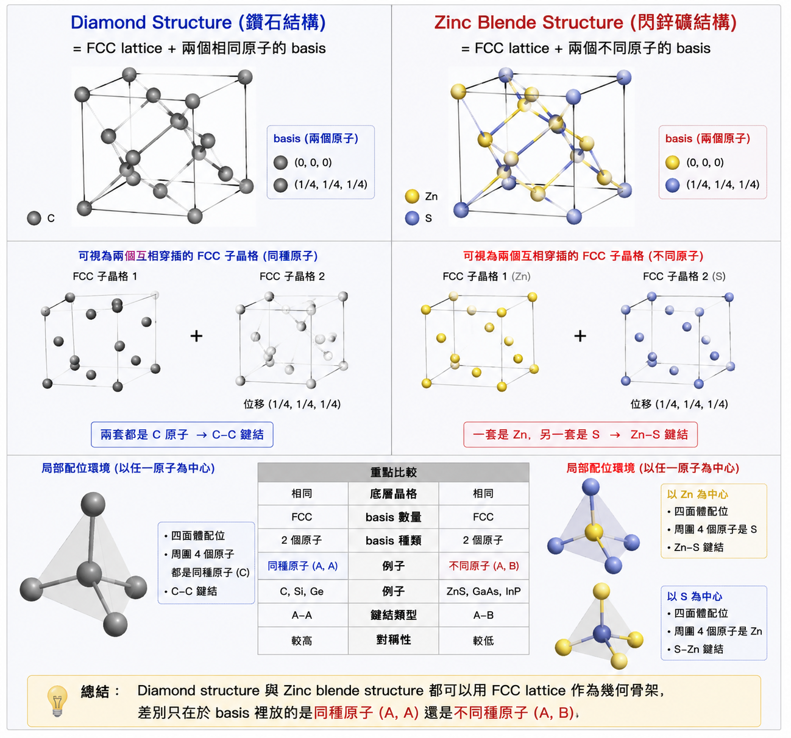
平移向量與週期邊界
若沿晶格向量 $\mathbf{T}=u\mathbf{a}+v\mathbf{b}+w\mathbf{c}$ 平移後結構完全重合，$\mathbf{T}$ 就是晶格平移。計算模型常使用週期邊界條件，把有限模擬盒的一側與另一側連接，近似無限晶體；但盒子太小時，缺陷會與自己的週期影像交互作用，造成非真實結果。
原子硬球模型適合估算配位數、堆積因子與半徑—晶格常數關係，但忽略電子密度、熱振動與鍵結方向。對金屬常相當有用，對開放共價結構或多離子陶瓷則需搭配更合適模型。模型是否好，不在於像不像照片，而在於是否保留問題需要的幾何與物理。
最近鄰與配位殼層
配位數通常指最近鄰原子數，但晶體還有第二、第三近鄰。BCC 的 8 個最近鄰之外，另有 6 個距離略大的次近鄰；在能量、擴散與磁性交互作用中，次近鄰也可能重要。報告配位時應說明距離判準，不能只看晶胞圖內有幾顆球。
📖 配位數的物理意義（點擊展開）
配位數（coordination number, CN）的物理意義：一個原子在晶體中直接「感受到」幾個最近鄰居。它不是單純的幾何數字，而是描述局部環境、鍵結方式、結構緊密度與反應性的核心指標。
配位數對照表
| 結構 | 配位數 | APF | 鍵結特徵 |
|---|---|---|---|
| FCC / HCP | 12 | 0.74 | 金屬鍵，最密堆積 |
| BCC | 8 | 0.68 | 金屬鍵，較開放 |
| Simple cubic | 6 | 0.52 | 金屬鍵，罕見 |
| Diamond cubic | 4 | 0.34 | sp3 方向性共價鍵 |
| NaCl | 6 : 6 | — | 離子鍵 |
| CsCl | 8 : 8 | — | 離子鍵 |
| ZnS（閃鋅礦） | 4 : 4 | — | 極性共價鍵 |
配位數反映鍵結型態
- 金屬鍵：非方向性（電子海），原子盡量靠近 → 常見高配位（FCC/HCP 12、BCC 8）。
- 共價鍵：有方向性（依賴軌域重疊與鍵角）→ 低配位。鑽石 CN = 4，對應 sp3 四面體鍵角 ~109.5°——碳原子不是要接觸愈多鄰居愈好，而是要滿足特定軌域方向。
- 離子鍵：由離子半徑比決定配位數。NaCl 為 6:6，CsCl 為 8:8，ZnS 為 4:4——陽離子需要足夠異電荷鄰居包圍，才能在幾何與電性上達到穩定。
配位數如何影響材料性質
密度與堆積：CN 高通常排列緊密、空隙少，但密度還受原子量與晶格常數影響——CN 高 ≠ 密度一定高。
力學行為：FCC（CN = 12）密排面多、滑移系統充足 → 延性好；BCC（CN = 8）無真正密排面、低溫差排受阻 → 可能脆性；鑽石（CN = 4）強方向性共價鍵 → 極硬但脆。CN 是理解「原子如何承受外力」的第一個線索。
擴散：結構開放（如 BCC 空隙較多）有助原子遷移，但方向性鍵（如鑽石）即使結構開放，強鍵結仍限制移動。配位環境決定原子跳躍路徑與活化能。
表面與缺陷：內部原子配位完整（FCC 內部 CN = 12），表面／邊／角／空位附近的原子配位數下降 → 出現「未滿足的鍵」→ 能量較高、化學活性更強。這是奈米催化與表面化學的基礎：低配位原子通常反應性更高。奈米粒子因表面原子比例極高，配位數效應尤其顯著。
配位數不是在數鄰居，而是在描述「這顆原子被怎樣的局部環境包圍，以及它因此會有什麼物理與化學行為」。
等價位置具有相同局部環境：
3.3 單位晶胞（Unit Cells）
單位晶胞（unit cell）是晶體結構的基本重複單元——可以想像成一個小盒子，將它在三維空間中沿各軸重複堆疊，就能建立整個晶體。單位晶胞的幾何形狀由六個晶格參數（lattice parameters）完整定義：三個邊長 $a, b, c$（分別沿 $x, y, z$ 軸）和三個軸間角 $\alpha$（$y$–$z$ 之間）、$\beta$（$x$–$z$ 之間）、$\gamma$（$x$–$y$ 之間）。
單位晶胞的選擇並非唯一——可以從不同的起點畫出不同形狀的平行六面體，重複堆疊後都得到相同的晶體。但慣例上，我們選擇最能反映晶體對稱性且盡可能具有直角的晶胞。例如在立方晶體中，我們選擇 $a=b=c$ 且 $\alpha=\beta=\gamma=90°$ 的立方體晶胞——雖然也可以選擇一個斜的菱方體晶胞來描述同樣的 FCC 結構，但這會隱藏結構的立方對稱性，不具實用價值。
對於立方晶體，只需要一個參數——晶格常數（lattice parameter）$a$——就能完整描述晶胞的尺寸。這大大簡化了後續的幾何推導。本章大部分討論集中在立方晶系，因為多數常見金屬（Al, Cu, Fe, Ni, Au 等）屬於此類。
單位晶胞類似於覆蓋整面牆的一片磁磚——將同一片磁磚沿水平和垂直方向重複排列，就能覆蓋任意大的面積。晶胞就是晶體的那片「磁磚」，只是在三維空間中重複排列。這個類比有助於理解為什麼晶胞邊緣的原子是「共用」的——就像兩片相鄰磁磚的邊界屬於兩片磁磚一樣。
晶胞的選擇並非唯一
任何能透過整數平移填滿空間並重建晶體的區域都可作晶胞。原始晶胞只含一個晶格點，體積最小；慣用晶胞可能含多個晶格點，卻能更清楚呈現對稱性。FCC 慣用立方晶胞含 4 個等價原子，原始晶胞則只含 1 個晶格點，但形狀不是立方體。
選晶胞時必須保持一致：晶格參數、晶胞體積與晶胞內原子數必須屬於同一選擇。若把原始晶胞的原子數放進慣用晶胞體積，密度會算錯。工程教材常使用慣用晶胞，因為方向、平面與幾何關係較直觀。
共享原子的計數原則
角落原子由 8 個立方晶胞共享，貢獻 $1/8$；面心由 2 個共享，貢獻 $1/2$；邊心由 4 個共享，貢獻 $1/4$；完全位於晶胞內部則貢獻 1。這些分數不是原子被切碎，而是為避免在相鄰晶胞中重複計數。最可靠的方法是想像將晶胞無限平鋪，再判斷一個位置被幾個晶胞共用。
📝 晶胞計數檢查
簡單立方：$8(1/8)=1$；BCC：$8(1/8)+1=2$；FCC：$8(1/8)+6(1/2)=4$。若計數結果不是這些值，通常是把圖中可見的球數直接相加，忽略共享關係。
晶格參數不只是一個邊長
一般晶胞由 $a,b,c$ 三個邊長與 $\alpha,\beta,\gamma$ 三個夾角描述。立方晶系因對稱性只需一個獨立邊長 $a$；六方晶系至少需 $a,c$。晶格參數會隨溫度、成分與殘留應變改變，精密 XRD 可利用峰位變化量測熱膨脹、固溶與應力。
對一般平行六面體，晶胞體積等於三個晶格向量的純量三重積 $V_c=|\mathbf a\cdot(\mathbf b\times\mathbf c)|$。這個形式同時處理斜角晶胞，也提醒我們晶胞體積取決於邊長與夾角；只有正交晶胞才可直接使用 $abc$。
3.4 金屬的晶體結構（Metallic Crystal Structures）
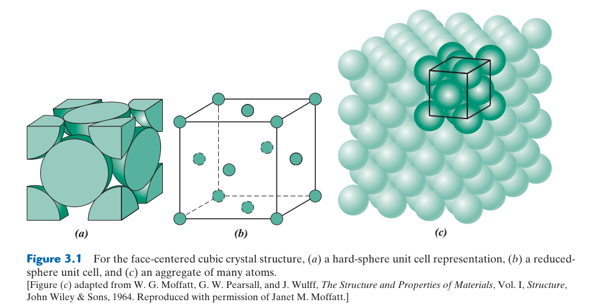
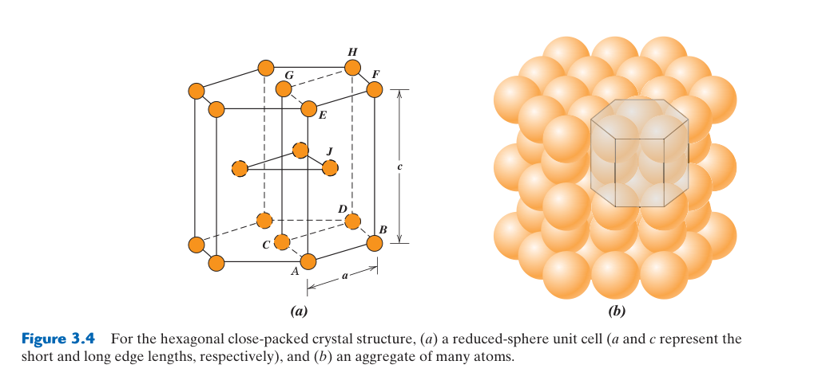
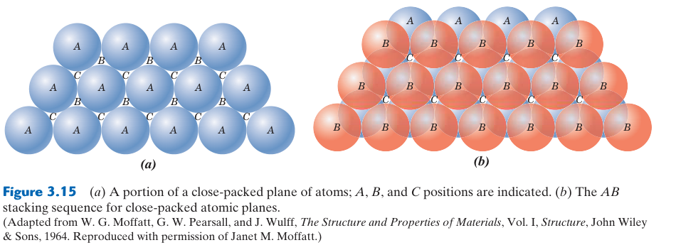
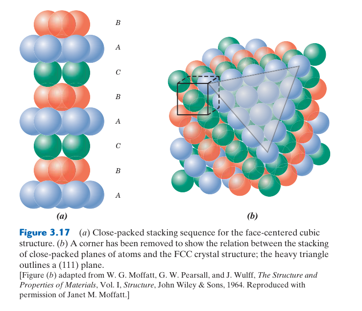
大多數常見金屬以三種相對簡單的晶體結構之一結晶。因為金屬鍵是非方向性的（電子海模型，見 Ch2 §2.6），金屬原子傾向於像硬球一樣盡可能緊密地堆積——就像將彈珠倒進盒子裡。這三種結構是：面心立方（FCC）、體心立方（BCC）和六方最密堆積（HCP）。
面心立方（FCC, Face-Centered Cubic）
FCC 結構中，原子位於立方體的八個頂點和六個面的中心。晶胞頂點上的每個原子被八個相鄰晶胞共用（因此每個晶胞分配到 $1/8$），面心上的每個原子被兩個相鄰晶胞共用（$1/2$）。因此每個 FCC 晶胞的等價原子數（equivalent number of atoms）為：$n = 8 \times \frac{1}{8} + 6 \times \frac{1}{2} = 4$。
FCC 中原子沿面對角線彼此接觸——這是最密堆積方向。面對角線長度為 $a\sqrt{2}$，沿此線上排列的三個原子（頂點——面心——對角頂點）的中心距離為 $R + 2R + R = 4R$。因此：
原子堆積因子（APF, Atomic Packing Factor）定義為晶胞內原子總體積除以晶胞體積，衡量堆積效率：
FCC 結構中 74% 的體積被原子佔據，26% 為空隙。FCC 的配位數為 12（每個原子有 12 個等距最近鄰）——這是等徑硬球在三維空間中可達到的最高配位數。
📝 範例 3.1：FCC 鋁的晶格常數
題目：鋁（Al）為 FCC 結構，原子半徑 $R = 0.143$ nm。求其晶格常數 $a$。
解：FCC 的 $a$–$R$ 關係為 $a = 2R\sqrt{2}$。
$a = 2(0.143)\sqrt{2} = 0.404$ nm。
若改以原子直徑 $D = 2R = 0.286$ nm 表示，$a = D\sqrt{2} = 0.286 \times 1.414 = 0.404$ nm。結果一致。
體心立方（BCC, Body-Centered Cubic）
BCC 結構中，原子位於立方體的八個頂點和一個中心位置。等價原子數：$n = 8 \times \frac{1}{8} + 1 = 2$。與 FCC 不同的是，BCC 的原子沿體對角線接觸。體對角線長度為 $a\sqrt{3}$，沿此線上的三個原子中心距離同樣跨越 $4R$。因此 $4R = a\sqrt{3}$ ⇒ $a = 4R/\sqrt{3}$。
BCC 的 APF = 0.68，低於 FCC/HCP 的 0.74——BCC 的堆積效率較低。BCC 的配位數為 8（加 6 個略遠的次近鄰），也低於 FCC 的 12。
六方最密堆積（HCP, Hexagonal Close-Packed）
HCP 的單位晶胞是六方柱體——上下兩個六邊形面的中心和頂點各有原子，中層有三個原子完全屬於此晶胞。等價原子數：$n = 12 \times \frac{1}{6} + 2 \times \frac{1}{2} + 3 = 6$。APF 同樣為 0.74——HCP 與 FCC 是最密堆積的兩種不同方式。理想 HCP 的軸比 $c/a = \sqrt{8/3} \approx 1.633$。
三種結構對照
| 特性 | FCC | BCC | HCP |
|---|---|---|---|
| 等價原子數 $n$ | 4 | 2 | 6 |
| $a$–$R$ 關係 | $a = 2R\sqrt{2}$ | $a = 4R/\sqrt{3}$ | $a = 2R$（底面） |
| 配位數 | 12 | 8 | 12 |
| APF | 0.74 | 0.68 | 0.74 |
| 範例金屬 | Al, Cu, Au, Ni, γ-Fe | α-Fe, W, Cr, Mo | Mg, Zn, Ti(α), Co |
| 室溫延性 | 高 | 中（低溫脆） | 低 |
BCC 的 APF (0.68) < FCC (0.74)，但某些方向的原子間距在 BCC 中反而更小，這影響了擴散速率。更重要的是，BCC 金屬在低溫下會經歷延脆轉變（ductile-to-brittle transition）——在低於某溫度時突然從延性變成脆性，這是 Liberty 船事故（Ch1）和 Titanic 鋼板脆斷的根源。FCC 金屬即使在極低溫下也保持延性，因此航太和低溫應用偏好鋁合金和不銹鋼。
不要只用 APF 判斷所有性質
FCC/HCP 的 APF 0.74 高於 BCC 的 0.68，但這不代表 FCC 在所有方向都比 BCC 更緊密，也不代表擴散一定較慢。擴散取決於實際遷移路徑、間隙幾何、缺陷濃度與活化能；塑性則取決於滑移面、方向與差排核心。APF 是全晶胞平均的幾何比例，只回答空間占有率。
BCC 雖有許多幾何上可能的滑移系統，卻沒有真正密排面，尤其螺旋差排的晶格阻力對溫度敏感，因此低溫可表現脆性。FCC 具有密排 $\{111\}$ 面與 $\langle110\rangle$ 方向，差排較易滑移，通常延性良好。HCP 同樣密排，卻因室溫可啟動的獨立滑移系統有限而較難成形。
間隙位置與小原子
密排結構仍有四面體與八面體間隙。間隙的數量與大小會影響 C、N、H 等小原子的固溶與擴散。FCC 的八面體間隙較能容納碳，因此 $\gamma$-Fe 的碳溶解度遠高於 BCC $\alpha$-Fe；碳進入過小間隙會造成強烈晶格畸變，既能強化，也會影響相穩定與擴散。
判斷間隙能否容納原子不能只比較空洞半徑。周圍原子可彈性位移，溶質與基材有化學作用，且不同位置的能量不只由尺寸決定。半徑比模型提供第一近似，實際溶解度仍需熱力學與實驗資料。
同一金屬可能隨溫度改變結構
鐵在室溫為 BCC $\alpha$-Fe，升溫後轉為 FCC $\gamma$-Fe，再於更高溫回到 BCC $\delta$-Fe。結構轉變會改變密度、碳溶解度與變形行為，也是鋼熱處理的根基。晶體結構不是元素永久不變的標籤，而是特定溫度、壓力與成分下的穩定排列。
晶胞圖的三種讀法
- 幾何讀法：找原子接觸方向，推導 $a$ 與 $R$。
- 拓撲讀法：計算最近鄰與連接方式，不被晶胞邊界切割迷惑。
- 工程讀法：把密排面、間隙與對稱性連到滑移、擴散與相變。
簡單立方為何少見？
簡單立方晶胞只有角落原子，等價原子數 1，原子沿立方邊接觸，因此 $a=2R$，配位數 6，APF 為 $\pi/6\approx0.52$。相較 BCC、FCC/HCP，它配位較少且空間利用率低，對非方向性金屬鍵通常不是最低能排列；釙是少數在常壓下採簡單立方結構的元素之一。
不過「APF 最大就一定最穩定」仍不成立。晶體穩定性來自電子結構與總自由能；BCC 鹼金屬與高溫鐵雖不最密排，仍可在特定條件穩定。硬球堆積能解釋幾何，但選擇 FCC、BCC 或 HCP 的微小能量差需更完整的電子與熱力學分析。
FCC 與 HCP 為何同樣密排卻不是同一結構？
兩者最近鄰配位數都是 12、APF 都是 0.74，第一配位殼層非常相似；差異出現在較遠鄰居與層堆疊：FCC 為 ABCABC，HCP 為 ABAB。這會改變繞射峰、滑移面組合、彈性與相穩定。只比較最近鄰或 APF 無法區分完整長程結構。
理想 HCP 軸比 $c/a=\sqrt{8/3}=1.633$ 來自等徑硬球接觸。實際金屬可偏離此值，例如 Zn 的軸比較大，因電子鍵結不完全服從硬球假設。軸比偏差會改變不同滑移系統的臨界應力與各向異性，不能把所有 HCP 金屬視為機械行為相同。
晶格常數會隨溫度與成分改變
升溫造成熱膨脹，$a(T)$ 增加，密度因晶胞體積增加而下降；接近相變時，晶格參數可能出現非線性或跳變。置換溶質尺寸不同也會改變平均晶格常數，在理想稀固溶體中常近似遵循 Vegard 定律，即晶格常數隨成分近線性變化，但實際會因局部應變與化學作用偏離。
XRD 測到的是大量晶胞的平均間距。若不同區域成分或應力不均，峰可能偏移、展寬或分裂。把晶格常數當作絕對固定的元素表格值，會錯過它作為溫度、成分與殘留應變探針的價值。
由結構預測材料行為的檢查表
| 結構資訊 | 可提出的假說 | 仍需資料 |
|---|---|---|
| 密排面與方向 | 可能滑移系統、差排 Burgers 向量 | 晶格阻力、溫度、溶質與第二相 |
| 間隙尺寸與數量 | 小原子固溶位置與擴散路徑 | 缺陷形成能與化學作用 |
| 晶格參數與原子數 | 理論密度、面間距、繞射峰 | 實際成分、孔隙與儀器校正 |
合金中的「平均晶體結構」
置換型固溶體中，不同元素可隨機占據同一類晶格位置。晶格仍可被稱為 FCC 或 BCC，表示長程平均平移對稱保留，但每個局部原子周圍的元素種類與鍵長不完全相同。XRD 常看到平均晶格與峰位，局部畸變則可能表現在漫散射、峰寬或原子配對分布中。
若不同元素偏好特定位置，冷卻後可能由無序固溶體轉為有序超晶格。此時基本晶格相似，卻出現新的週期與超晶格繞射峰；差排移動也需維持有序關係，材料可能變強但延性下降。只寫「FCC 合金」可能不足以區分有序與無序狀態。
晶體圖中的原子位置是時間平均
有限溫度下原子持續在平衡位置附近振動，晶格點代表時間平均位置而非原子完全靜止。溫度升高使振幅增加，繞射強度因熱振動而改變；接近熔點時，空位與非簡諧振動也更顯著。晶體具有週期性不表示每一瞬間所有原子都精確落在數學點上。
外加彈性應力會讓晶格間距產生極小可逆改變；卸載後恢復。塑性變形則藉差排使晶格區塊產生永久相對位移，但大部分晶內仍保有原本晶體結構。這解釋了金屬即使嚴重變形仍可由 XRD 辨認 FCC/BCC，只是峰位、寬度與織構發生變化。
由繞射確認，而不是由外形猜測
巨觀晶體可能長出反映對稱性的平整晶面，但加工後的金屬外形幾乎不保留自然晶形；一個立方零件也不代表內部是立方晶體。晶體結構應由 XRD、電子繞射或其他原子尺度證據確認。外形、晶粒形貌與晶胞對稱是三個不同層級的幾何。
3.5 密度計算（Density Computations）
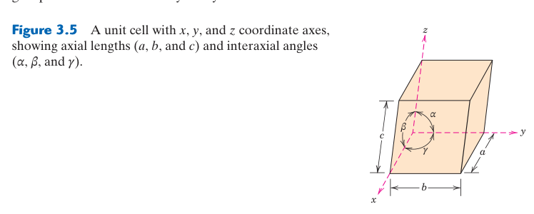
從晶體結構知識可以理論計算金屬的密度，並與實驗測量值比較——這是驗證結構模型正確性的重要方法。如果計算值與實驗值吻合（差異在 1–2% 以內），就間接證實了我們對原子排列的假設是正確的。
推導邏輯：一個晶胞中有 $n$ 個原子，每個原子的質量為 $A/N_A$（克），晶胞總質量為 $nA/N_A$。除以晶胞體積 $V_C$ 即得密度。注意單位轉換——晶格常數通常以 nm 為單位，必須轉換為 cm（1 nm = $10^{-7}$ cm）。
📝 範例 3.2：計算銅的理論密度
題目：銅（Cu）為 FCC 結構，$R = 0.128$ nm，$A = 63.55$ g/mol。計算銅的理論密度並與實驗值 8.94 g/cm³ 比較。
解：
Step 1：FCC 的 $a = 2R\sqrt{2} = 2(0.128)\sqrt{2} = 0.362$ nm。
Step 2：$V_C = a^3 = (3.62 \times 10^{-8} \text{ cm})^3 = 4.74 \times 10^{-23} \text{ cm}^3$。
Step 3：$\rho = \dfrac{4 \times 63.55}{(4.74 \times 10^{-23})(6.022 \times 10^{23})} = \dfrac{254.2}{28.55} = 8.90$ g/cm³。
答案：理論密度 8.90 g/cm³，與實驗值 8.94 g/cm³ 差異僅 ~0.4%，證實了銅的 FCC 結構模型。
密度公式的來源與單位檢查
晶胞質量為 $m_c=nA/N_A$，晶胞體積為 $V_c$，因此 $\rho=m_c/V_c=nA/(V_cN_A)$。若 $A$ 使用 g/mol，$V_c$ 就應使用 cm³ 才得到 g/cm³。常見錯誤是把 nm³ 直接代入；因 $1$ nm $=10^{-7}$ cm，所以 $1$ nm³ $=10^{-21}$ cm³。
對非立方晶胞，體積不一定是 $a^3$。六方慣用晶胞體積可由底面面積乘高度求得；一般斜晶胞則需考慮夾角。密度公式本身不變，真正要小心的是晶胞選擇、原子數與幾何體積是否一致。
📐 常見晶體結構的 a–R 關係速查（點擊展開）
密度公式 $\rho = nA/(V_C N_A)$ 中，晶胞體積 $V_C$ 是 $a$ 的函數，而 $a$ 與原子半徑 $R$ 的關係取決於原子沿哪個方向彼此接觸。以下是硬球模型下各結構的推導結果：
| 結構 | $n$ | $a$–$R$ 關係 | 接觸方向 | 幾何推導 |
|---|---|---|---|---|
| SC（簡單立方） | 1 | $a = 2R$ | 立方邊 | 原子沿立方邊彼此接觸。相鄰兩頂點原子中心距即為邊長，等於兩原子半徑之和：$a = R + R = 2R$。 |
| BCC（體心立方） | 2 | $a = 4R/\sqrt{3}$ | 體對角線 | 原子沿體對角線接觸。體對角線依序穿過：頂點原子（半徑 $R$）→ 體心原子（直徑 $2R$）→ 對角頂點原子（半徑 $R$），原子中心總跨距 $= R + 2R + R = 4R$。又體對角線長 $= \sqrt{3}\,a$，故 $\sqrt{3}\,a = 4R$，得 $a = 4R/\sqrt{3}$。體心原子同時與 8 個頂點原子等距接觸。 |
| FCC（面心立方） | 4 | $a = 2R\sqrt{2} = 4R/\sqrt{2}$ | 面對角線 | 原子沿面對角線接觸——這是 FCC 的最密堆積方向。面對角線依序穿過：頂點原子（$R$）→ 面心原子（$2R$）→ 對角頂點原子（$R$），跨距 $= R + 2R + R = 4R$。又面對角線長 $= \sqrt{2}\,a$，故 $\sqrt{2}\,a = 4R$，得 $a = 2R\sqrt{2}$。面心原子與該面上 4 個頂點原子接觸。 |
| HCP（六方最密） | 6 | $a = 2R$（底面） | 底面六邊形邊 | 底面為正六邊形，相鄰原子沿六邊形邊彼此接觸：$a = 2R$。理想軸比 $c/a = \sqrt{8/3} \approx 1.633$ 來自三層原子的幾何約束：中層原子（位於底面三角形凹槽上方）必須同時接觸上下兩層原子，形成正四面體排列。由四面體高度關係可推得 $c = 2a\sqrt{2/3}$。 |
| Diamond（鑽石立方） | 8 | $a = 8R/\sqrt{3}$ | $1/4$ 體對角線 | FCC 晶格搭配兩原子基底：原子 1 在 $(0,0,0)$，原子 2 在 $(1/4,1/4,1/4)$。兩原子沿體對角線方向相距 $(1/4)\sqrt{3}\,a$。此距離即兩個相鄰碳原子中心距，在硬球模型中等於 $2R$。故 $(1/4)\sqrt{3}\,a = 2R$，得 $a = 8R/\sqrt{3}$。注意鑽石結構每個晶胞含 8 個原子（FCC 的 4 個＋基底位移出的另外 4 個）。 |
理論密度與實測密度的差異能提供資訊
由晶體結構計算的理論密度假設成分正確、晶格完整且沒有巨觀孔隙。實測值較低可能來自孔隙、裂縫、低密度第二相或成分差異；較高則可能表示高密度第二相、錯誤晶相假設或量測偏差。若材料只有孔隙造成差異，可用 $P\approx1-\rho_{\text{bulk}}/\rho_{\text{theoretical}}$ 粗估孔隙率。
粉末的堆積密度、材料的體積密度與晶體理論密度不可混用。粉末顆粒之間有大量空隙，鬆裝與振實狀態也不同；燒結後密度提高，反映孔隙被消除，而不是原子本身質量增加。
📝 反向判斷：用密度檢查晶體結構
已知元素原子量、原子半徑與實測密度時，可分別假設 BCC 與 FCC，利用各自 $n$ 及 $a$–$R$ 關係計算理論密度；與實測最接近者是候選結構。這只能作一致性檢查，若材料含孔隙、合金元素或多相，仍需 XRD 確認。
合金的晶胞質量：若晶格位置由多元素隨機占據，可使用該位置的平均原子量；若為有序化合物，則應依基底中各元素的確切數目相加。簡單混合法則 $1/\rho=\sum w_i/\rho_i$ 可估算無體積變化的多相混合物，但與由單一固溶晶格計算密度的物理假設不同。
密度也會隨溫度下降，主要因體積熱膨脹而非質量流失。若線膨脹係數近似 $\alpha$，各向同性材料體積膨脹係數約 $3\alpha$；在有限溫區可估算 $\rho(T)\approx\rho_0/[1+3\alpha\Delta T]$。精確高溫計算還需使用隨溫度變化的膨脹資料。
3.6 多晶性與同素異形（Polymorphism and Allotropy）
多晶性（polymorphism）是指一種材料可以具有多種晶體結構的現象——在不同溫度和／或壓力下，不同的晶體結構具有更低的 Gibbs 自由能，因此更穩定。當這種現象發生在元素固體時，特別稱為同素異形（allotropy）。
最經典的例子是純鐵：室溫下為 BCC（α-鐵／肥粒鐵 ferrite）→ 加熱到 912°C 轉變為 FCC（γ-鐵／沃斯田鐵 austenite）→ 再加熱到 1394°C 又變回 BCC（δ-鐵）。這些轉變是可逆的。FCC 在中間溫區較穩定，不能只歸因於 APF 較高；真正條件是各結構 Gibbs 自由能的交會，其中包含電子、磁性與晶格振動的焓與熵貢獻。δ-Fe 在更高溫重新成為 BCC，正好證明「最密排永遠最穩定」並不成立。
📝 案例研究：錫的「錫疫」（Tin Pest）
白錫（β-Sn，體心正方結構，金屬性）在 13.2°C 以下會自發轉變為灰錫（α-Sn，鑽石立方結構，半導體性）。此轉變伴隨約 27% 的體積膨脹，使原本堅固的金屬錫崩解為灰色粉末——稱為「錫疫」。這個現象在歷史上有深遠影響：傳說拿破崙 1812 年遠征俄羅斯失敗的原因之一是士兵的錫製制服鈕扣在俄羅斯寒冬中粉碎。雖然此事可能有誇大成分，但錫疫確實在有機錫材料中是真實的冶金問題。現代解決方案：在錫中添加少量銻（Sb）或鉍（Bi）可有效抑制此轉變。
FCC 的 γ-鐵的八面體間隙雖然數量少於 BCC，但每個間隙的尺寸更大，因此能溶解高達 ~2.14 wt% 的碳。而 BCC 的 α-鐵的間隙則極小，室溫下幾乎不能溶解碳（< 0.005 wt%）。當 γ-鐵快速冷卻時，碳原子來不及擴散出去，被困在 BCC 結構中——迫使晶體剪切轉變為極硬的麻田散鐵（martensite，見 Ch10）。沒有這個 BCC ↔ FCC 的結構轉變，就沒有鋼的淬火硬化，就沒有鋼鐵工業。
多晶性是自由能競爭的結果
同一化學組成可有不同晶體排列，各相具有不同內能、振動熵與體積。某溫度壓力下 Gibbs 自由能最低的相最穩定；升溫後熵較大的結構可能變得有利，施加壓力則常偏好體積較小的結構。因此相變溫度不是只由「哪個排列更緊密」決定。
穩定相也未必立即形成。原子必須移動並建立新界面，若成核障礙高或擴散很慢，舊相可在穩定範圍外暫時保留，形成亞穩態。快速冷卻、微量雜質與晶粒尺寸都可能改變轉變路徑。這是為什麼熱處理歷史會影響最後結構，而不是溫度一到就瞬間平衡。
相變伴隨的體積改變具有工程後果
若新舊晶體的密度不同，相變會產生膨脹或收縮；零件內部轉變不均時便形成應力、翹曲甚至裂紋。錫疫中白錫轉灰錫伴隨顯著體積膨脹而粉化；鋼中沃斯田鐵轉麻田散鐵也伴隨體積與形狀應變，需要在淬火設計中控制。
合金化可穩定某一同素異形體。例如 Ni 能擴大鋼中 FCC 沃斯田鐵的穩定範圍，使某些不銹鋼在室溫維持 FCC 結構；這同時影響延性、磁性與低溫韌性。成分透過改變各相自由能，把原本只在高溫穩定的結構保留下來。
如何偵測轉變：XRD 可直接看到峰組由一種晶體結構變成另一種；熱分析可量到轉變吸放熱；膨脹儀可偵測晶格與相比例改變造成的長度變化；電阻與磁性也可能出現訊號。多種方法交叉驗證，可區分真正相變與單純熱膨脹。
相變溫度常具有加熱／冷卻遲滯，因新相成核需克服界面能障礙。量測速率愈快，觀察到的開始與完成溫度可能偏移；試片純度、晶粒與應力也會改變成核位置。因此相變溫度應附帶量測條件，而不是被視為所有試片完全相同的單點。
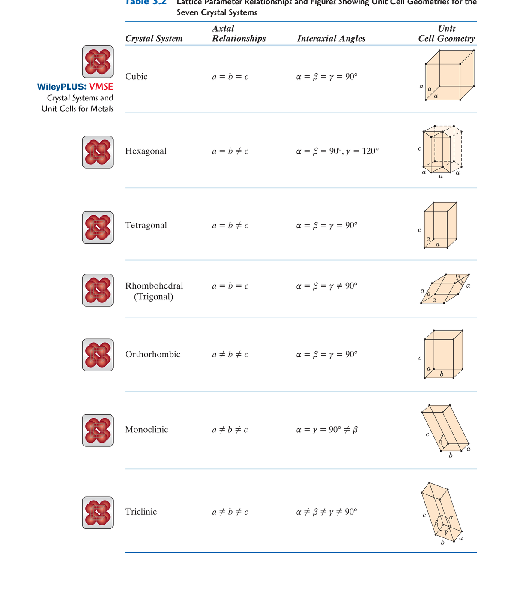
3.7 晶系（Crystal Systems）
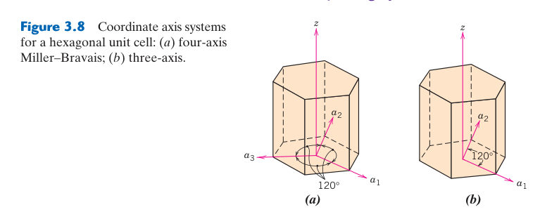
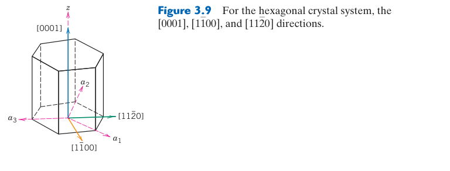
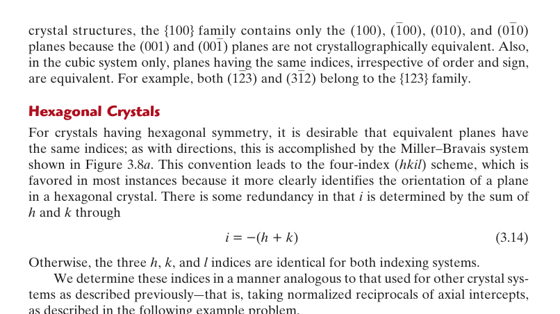
根據六個晶格參數之間的關係，所有晶體結構可以歸入七種晶系。每種晶系可加上面心（F）、體心（I）或底心（C）的變體，總計產生14 種 Bravais 晶格——涵蓋所有可能的三維平移對稱性。
| 晶系 | 軸長關係 | 軸間角 | Bravais 晶格 |
|---|---|---|---|
| 立方 Cubic | $a=b=c$ | $\alpha=\beta=\gamma=90°$ | P, I, F |
| 正方 Tetragonal | $a=b \neq c$ | $\alpha=\beta=\gamma=90°$ | P, I |
| 斜方 Orthorhombic | $a \neq b \neq c$ | $\alpha=\beta=\gamma=90°$ | P, I, F, C |
| 菱方 Rhombohedral | $a=b=c$ | $\alpha=\beta=\gamma \neq 90°$ | P |
| 六方 Hexagonal | $a=b \neq c$ | $\alpha=\beta=90°, \gamma=120°$ | P |
| 單斜 Monoclinic | $a \neq b \neq c$ | $\alpha=\gamma=90° \neq \beta$ | P, C |
| 三斜 Triclinic | $a \neq b \neq c$ | $\alpha \neq \beta \neq \gamma \neq 90°$ | P |
立方晶系對稱性最高（僅需一個參數 $a$）；三斜晶系對稱性最低（需全部六個參數）。多數常見金屬屬於立方或六方晶系。晶系的對稱性直接限制了材料可能表現的物理性質：例如只有無對稱中心（不具反演對稱）的晶系才可能具有壓電性——這就是為什麼壓電陶瓷（如 BaTiO₃, PZT）必須屬於正方或六方等非中心對稱晶系。
晶系分類依據是對稱，不只是盒子形狀
七晶系用晶格參數關係呈現不同對稱限制；14 種 Bravais 晶格則再區分格點可位於角落、體心、面心或底心。並非每種「晶系 × 中心型式」都會產生新的獨立晶格，有些可透過重新選擇原始向量化成另一種表示，因此最後只有 14 種。
對稱操作包括旋轉、鏡射、反演及其組合。若操作後結構與原來不可區分，就屬於該晶體的對稱元素。平移對稱決定 Bravais 晶格，加入基底內部的旋轉與鏡射後，才能完整描述點群與空間群。本章只使用晶系作入門，但 XRD 結構解析會進一步利用系統消光與空間群。
對稱性會減少獨立材料常數
彈性、熱膨脹、介電與導熱等性質具有方向分量。立方對稱使許多方向在對稱操作下等價，因此所需獨立常數較少；低對稱晶體需要更多參數才能完整描述。這不是量測方便性的差別，而是晶體對稱對物理定律形式的限制。
為什麼壓電性需要「無反演中心」？
壓電效應（piezoelectric effect）是指材料在受到機械應力時，內部正負電荷中心發生相對位移，在兩端產生電壓；反之，外加電場也可使材料產生機械變形（逆壓電效應）。要理解為什麼壓電性與晶體對稱有關，關鍵在於反演對稱（inversion symmetry）的概念。
反演中心（center of inversion）是晶體中的一個點，通過此點，每個位於 $(x, y, z)$ 的原子，都有另一個完全相同的原子位於 $(-x, -y, -z)$。如果你把晶體沿此點「翻轉」，結構與原來完全重合。
現在想像對這樣的晶體施加應力：如果某個原子沿 $+z$ 方向位移了 $\delta$，由於反演對稱的要求，與它成對的另一個原子必須沿 $-z$ 方向位移相同的 $\delta$——兩者的電荷位移量相等、方向相反，產生的電偶極矩互相抵消，巨觀上不會出現淨極化。這就是為什麼具有反演中心的晶體不可能表現線性壓電效應。
哪些晶系有反演中心？七晶系中：立方晶系的多數點群具有反演中心（但閃鋅礦結構的 $\bar{4}3m$ 點群為例外）；六方和正方晶系的某些點群沒有反演中心；三斜和單斜晶系則視具體點群而定。實際上，32 個晶體點群中有 21 個不具反演中心，但其中只有 20 個表現壓電性（立方點群 432 雖無反演中心，但因其他對稱限制也無法壓電）。
「無反演中心」是必要條件，不是充分條件。即使晶體沒有反演中心，要實際產生可用的壓電響應，還需要：
- 極性方向：晶體中必須存在一個「特別」的方向，沿此方向正負電荷可以不對稱地位移。並非所有無反演中心的點群都具有極軸。
- 合適的鍵結：原子間的鍵結必須允許離子在應力下產生足夠大的相對位移。純共價鍵因電子雲對稱共享，壓電效應通常較弱；離子性強的材料（如鈣鈦礦結構）壓電響應更大。
- 畴結構與極化處理：鐵電材料（如 BaTiO₃）雖具有自發極化，但剛製備時內部被分割成許多極化方向隨機的「畴」（domain），巨觀上互相抵消。必須在高溫下施加強電場進行極化處理（poling），使各畴的極化方向趨於一致，材料才表現出明顯的壓電性。
鈦酸鋇（BaTiO₃）在高於 120°C 時為立方鈣鈦礦結構（有反演中心，不壓電）；冷卻至室溫時轉變為正方結構，Ti⁴⁺ 離子偏離中心位置，失去反演對稱，產生自發極化——成為壓電材料。PZT（鋯鈦酸鉛，PbZrxTi1-xO₃）則透過調整 Zr/Ti 比例，在正方與菱方相的邊界處（準同型相界，MPB）達到最大壓電響應，廣泛用於超音波換能器、精密定位器與點火裝置。
從實驗晶格參數辨認晶系
若 XRD 精修得到 $a=b=c$ 且三角皆 90°，可歸入立方晶系；若 $a=b\neq c$ 且皆 90°，則可能是正方晶系。實際峰位受應變與儀器誤差影響，不會永遠呈現完美相等，因此分類需結合誤差範圍、峰分裂與消光規則，而不是只比較四捨五入數字。
晶系不等於晶格中心型式：「立方」只給軸長與角度關係，仍可有簡單、體心與面心三種 Bravais 晶格；「正方」也可有簡單與體心。命名材料結構時應至少區分晶系、Bravais 晶格與基底，否則「它是立方」仍不足以重建原子位置。
3.8 點座標（Point Coordinates）
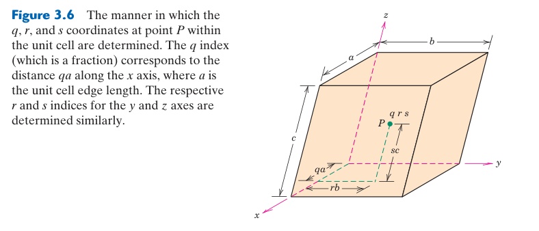
晶胞內的任意點位置可以使用三個指數 $q, r, s$ 表示——以晶胞邊長為單位，每個指數範圍從 0 到 1。例如：晶胞角落為 000（原點）；晶胞中心（體心）為 $\frac{1}{2}\frac{1}{2}\frac{1}{2}$；面心位置包括 $\frac{1}{2}\frac{1}{2}0$（$xy$ 面）、$\frac{1}{2}0\frac{1}{2}$（$xz$ 面）、$0\frac{1}{2}\frac{1}{2}$（$yz$ 面）。點座標是推導方向指數和平面指數的基礎。
分率座標與實際距離
分率座標 $(q,r,s)$ 表示位置向量 $\mathbf{r}=q\mathbf{a}+r\mathbf{b}+s\mathbf{c}$。在立方晶胞中，$(1/2,1/2,0)$ 的直角座標是 $(a/2,a/2,0)$；若晶胞不是正交，三個基向量有夾角，不能直接用普通直角座標距離公式而忽略晶格度量。
分率座標不一定侷限於 0 到 1。由於週期性，$(1.2,-0.1,0.5)$ 與減去整數平移後的 $(0.2,0.9,0.5)$ 表示等價位置。資料庫常把原子折回單一晶胞方便比較，但分析跨晶胞鍵結時，保留鄰近週期影像反而更直觀。
原點選擇與等價位置
晶胞原點可選在不同但對稱等價的位置；所有原子座標會一起平移，原子間距與結構不變。比較兩份結構資料時，不能只看座標數字是否相同，還要允許原點平移、軸交換與週期整數差。晶體結構的本質是相對排列與對稱，而非某一組唯一座標。
📝 由兩點求位移向量
由 $P_1=(1/4,1/2,0)$ 指向 $P_2=(3/4,0,1/2)$，分率位移為 $(1/2,-1/2,1/2)$。若只需方向指數，乘 2 化為 $[1\bar{1}1]$；若要求實際長度，還需乘各晶格向量並計算幾何距離。
原子占位率也常附在點座標上。占位率 0.8 表示大量晶胞的該位置平均有 80% 被指定原子占據，不是單一位置存在 0.8 顆原子。部分占位可代表空位、無序固溶或多元素共同占據。
3.9 晶體學方向（Crystallographic Directions）
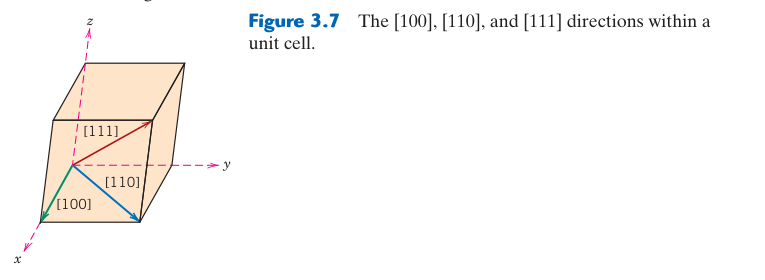
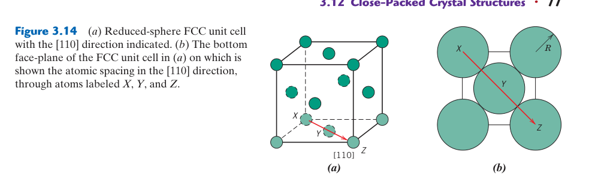
方向指數 $[uvw]$ 的求法：(1) 建立通過原點的向量；(2) 將向量在三軸上的投影以晶格參數為單位表示；(3) 化為最小整數組；(4) 以方括號 $[uvw]$ 標記（負值以上劃線表示如 $[\bar{1}00]$）。例如體對角線為 $[111]$，面對角線為 $[110]$。等價方向群稱為方向族（family），以 $\langle uvw \rangle$ 表示——立方晶系中 $\langle 100 \rangle$ 包含 $[100], [010], [001]$ 及其負方向。
六方晶系使用四軸座標系 $(a_1, a_2, a_3, z)$，方向標記為 $[uvtw]$，其中 $u+v+t=0$。三指數轉四指數的公式：$u = (2U-V)/3$, $v = (2V-U)/3$, $t = -(u+v)$, $w = W$。例如 $[100]$ → $[2\bar{1}\bar{1}0]$。雖然看似繁瑣，但四指數系統確保了對稱性等價的方向具有相似外觀的指數。
方向由位移差決定，不由起點決定
若向量不通過原點，可把整條向量平行搬移到原點，或直接用終點座標減起點座標。方向只記錄比例，因此 $[123]$、$[246]$ 指向相同方向，必須化成最小整數 $[123]$。反方向則是 $[\bar1\bar2\bar3]$，兩者在有極性的晶體中未必物理等價。
出現分數時，乘以最小公倍數化整數；出現負分量則以橫線標示，不能把負號省略。計算後可用幾何檢查：某分量為零表示方向平行於對應座標平面，三分量相等在立方晶胞中指向體對角線。
方向族與等價性取決於對稱
在晶體學中，方括號 $[uvw]$ 表示一個特定的方向；尖括號 $\langle uvw \rangle$ 則表示由晶體對稱性所聯繫的一族等價方向（direction family）。同一個 $\langle uvw \rangle$ 族內的所有方向，可以透過晶體允許的對稱操作（旋轉、鏡射、反演）互相轉換——因此它們的原子排列方式、鍵結環境與物理性質在該晶系中完全相同。換句話說，不是指數看起來相似就等價，而是晶體的對稱性決定了哪些方向真正等價。
立方晶系中的方向族——以具體數字說明
立方晶系因對稱性最高，同一族的方向數量也最多。以下是三個最重要的方向族：
| 方向族 | 幾何意義 | 成員數 | 成員列表 |
|---|---|---|---|
| $\langle 100 \rangle$ | 立方邊（cube edge） | 6 | $[100], [010], [001], [\bar{1}00], [0\bar{1}0], [00\bar{1}]$ |
| $\langle 110 \rangle$ | 面對角線（face diagonal） | 12 | $[110], [1\bar{1}0], [\bar{1}10], [\bar{1}\bar{1}0], [101], [10\bar{1}], [\bar{1}01], [\bar{1}0\bar{1}], [011], [01\bar{1}], [0\bar{1}1], [0\bar{1}\bar{1}]$ |
| $\langle 111 \rangle$ | 體對角線（body diagonal） | 8 | $[111], [\bar{1}11], [1\bar{1}1], [11\bar{1}], [\bar{1}\bar{1}1], [\bar{1}1\bar{1}], [1\bar{1}\bar{1}], [\bar{1}\bar{1}\bar{1}]$ |
以 $\langle 100 \rangle$ 為例：立方晶胞有三組互相垂直的等效邊，每條邊可取正反兩個方向，因此 $3 \times 2 = 6$ 個成員。這些方向之所以等價，是因為立方晶系具有沿每個軸的 4 次旋轉對稱——旋轉 90° 後，$[100]$ 變成 $[010]$，晶體結構完全重合。$\langle 110 \rangle$ 的 12 個成員則來自：3 組面對角線方向 $\times$ 每組 4 個正負組合 = 12 個（恰好對應立方體 6 個面的 12 條對角線）。
同一組指數，不同晶系 = 完全不同的等價範圍
這是初學者最容易忽略的關鍵點：$\langle uvw \rangle$ 的具體成員取決於晶系對稱性，而不是指數的外觀。同樣寫 $\langle 100 \rangle$，在不同晶系中代表的方向集合截然不同：
⚡ 案例對比：⟨100⟩ 在三個晶系中（點擊展開）
立方晶系（$a=b=c$，$\alpha=\beta=\gamma=90°$）：三個軸完全等價 → $\langle 100 \rangle$ 包含全部 3 組軸方向（共 6 個）。
正方晶系（$a=b \neq c$，$\alpha=\beta=\gamma=90°$）：$x$ 與 $y$ 軸等價，但 $z$ 軸不同 → $\langle 100 \rangle$ 只包含 $[100]$ 和 $[010]$ 及其反向（共 4 個），不包含 $[001]$！因為 $c \neq a$，沿 $z$ 軸的原子間距與 $x$、$y$ 軸不同，旋轉對稱無法將 $[001]$ 變成 $[100]$。要表示 $z$ 軸方向，必須使用 $\langle 001 \rangle$。
正交晶系（$a \neq b \neq c$，$\alpha=\beta=\gamma=90°$）：三軸長度皆不等 → $\langle 100 \rangle$ 只有 $[100]$ 和 $[\bar{1}00]$（共 2 個）。$[010]$ 屬於 $\langle 010 \rangle$，$[001]$ 屬於 $\langle 001 \rangle$，三者互不等價。
這個概念對材料性質的理解至關重要。例如在正方晶系的 BaTiO₃ 中，由於 $c$ 軸是自發極化方向（鐵電軸），$[001]$ 的介電與壓電性質與 $[100]$ 截然不同——若是立方晶系，就不會有這種方向性差異。
方向族的多重度影響滑移系統計數
方向族中成員的數量稱為多重度（multiplicity）。在計算滑移系統數量時，多重度直接決定了一個滑移面上有多少可用的滑移方向：
- FCC：滑移系統為 $\{111\}\langle 110 \rangle$。$\{111\}$ 有 4 個等價面（八面體面），每個面上有 3 個 $\langle 110 \rangle$ 方向（該面的三條邊方向）。$4 \times 3 = 12$ 個滑移系統，滿足 von Mises 準則（多晶均勻變形需 $\ge 5$ 個獨立系統），因此 FCC 金屬延性極佳。
- BCC：滑移方向為 $\langle 111 \rangle$（4 個體對角線），可配合 $\{110\}$、$\{112\}$ 或 $\{123\}$ 滑移面。總滑移系統數可達 48 個，但 Peierls 應力較高，低溫下實際可啟動的系統有限。
- HCP：基底滑移系統為 $\{0001\}\langle 11\bar{2}0 \rangle$。$\langle 11\bar{2}0 \rangle$ 在六方對稱下只有 3 個等價方向（底面的三條 $a$ 軸），加上唯一一個基底面，僅 3 個滑移系統——這就是鎂合金室溫難以成形的原因。
計數時要注意：是否將 $[uvw]$ 和 $[\bar{u}\bar{v}\bar{w}]$ 視為同一個滑移方向？在差排理論中，正負方向的 Burgers 向量大小相同、僅符號相反，差排可沿兩個方向滑移，因此通常將正反方向合併計為一個滑移方向。但在極性晶體（如 GaAs、ZnO）中，$[111]$（Ga 面）與 $[\bar{1}\bar{1}\bar{1}]$（As 面）的化學環境與蝕刻行為完全不同——正反方向在此並不物理等價。
在立方晶系中，方向 $[uvw]$ 是否位於平面 $(hkl)$ 內？只要檢查 $hu + kv + lw = 0$ 即可。例如 $[1\bar{1}0]$ 位於 $(111)$ 面（$1-1+0=0$），但 $[100]$ 不在 $(111)$ 面（$1+0+0 \neq 0$）。這個簡單判準在組合滑移面與滑移方向時非常實用。
方向指數的物理用途
單晶拉伸方向、熱流、磁化方向與晶體成長方向都可用方向指數表達。例如矽晶圓標示 $\langle100\rangle$ 或 $\langle111\rangle$ 取向，是因蝕刻、載子與機械行為會隨晶向改變。指數不是圖學作業的終點，而是把方向性實驗與原子排列相連的標籤。
📝 方向檢核：從兩點到最小整數
由 $(1/2,0,1)$ 指向 $(0,1/2,1/2)$：終點減起點得 $(-1/2,1/2,-1/2)$，乘 2 得 $[\bar11\bar1]$。若把減法順序反過來，會得到相反方向 $[1\bar11]$；兩者都可能正確，但必須符合題目箭頭。
3.10 晶體學平面（Crystallographic Planes）
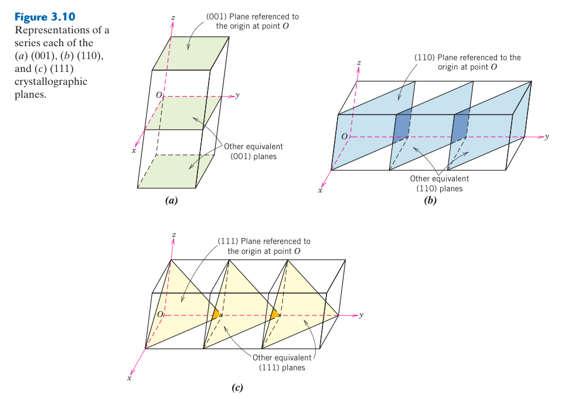
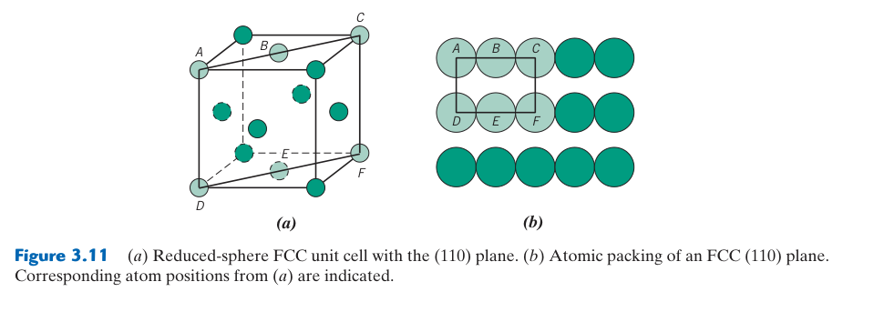
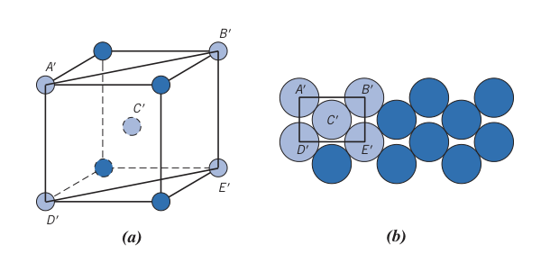
Miller 指數 $(hkl)$ 是描述晶面方向的標準方法。在立方晶系中：(1) 找平面與三軸的截距，以晶格參數為單位；(2) 取截距的倒數（平行軸 → 截距 $\infty$ → 倒數 $0$）；(3) 化為最小整數組。例如：截距為 $(1, 1, \frac{1}{2})$ → 倒數 $(1, 1, 2)$ → Miller 指數 $(112)$。
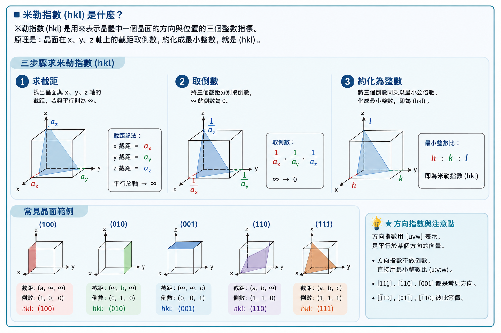
$[uvw]$（方括號）= 方向（向量），$(hkl)$（圓括號）= 平面。立方晶系中 $[hkl] \perp (hkl)$ 成立，但非立方晶系中這個關係通常不成立。平面族以花括號 $\{hkl\}$ 表示，如立方晶系 $\{110\}$ 包含 6 個等價面。
📝 範例 3.3：求 (112) 平面的面間距
題目：銅（Cu, FCC, $a = 0.362$ nm）的 (112) 平面面間距是多少？
解：$d_{112} = \dfrac{a}{\sqrt{1^2 + 1^2 + 2^2}} = \dfrac{0.362}{\sqrt{6}} = 0.148$ nm。
比較 $(111)$ 面（最密面）：$d_{111} = 0.362/\sqrt{3} = 0.209$ nm。$(111)$ 的間距更大——因為 Miller 指數愈小（$h^2+k^2+l^2$ 愈小），間距愈大，原子面密度也愈高。
倒截距法為何有效？
一族平行晶面可寫成 $hx/a+ky/b+lz/c=1$；指數愈大，沿該軸的截距愈短。因此由截距取倒數，正好得到平面法向在倒晶格中的整數係數。Miller 指數描述的是平面取向，不是某一張唯一平面的位置；所有平行且等間距的晶面屬於同一 $(hkl)$ 族列。
若平面通過原點，截距為零而無法取倒數，可先沿平行方向移到相鄰等價平面，再讀取截距。平行某軸代表截距為無限大，倒數為零，所以 $(110)$ 平行 z 軸。負截距以橫線表示，例如 $(\bar110)$，不可將符號省略。
平面族與對稱等價
圓括號 $(hkl)$ 表示特定取向，花括號 $\{hkl\}$ 表示由晶體對稱生成的等價平面族。在立方晶系，$\{100\}$ 包含垂直三軸的六個正反面；$\{111\}$ 有八個等價取向。低對稱晶體中交換指數不一定等價，不能照搬立方晶系的多重度。
方向是否位於平面內？
立方晶系中，方向 $[uvw]$ 位於平面 $(hkl)$ 內的條件為 $hu+kv+lw=0$。例如 $[1\bar10]$ 位於 $(111)$ 面，因 $1-1+0=0$。這個判準可用來組合滑移面與滑移方向。$[hkl]$ 垂直 $(hkl)$ 也只在立方正交且三軸尺度相同時成立。
📝 由截距求 Miller 指數
某平面截距為 $(2a,-b,\infty c)$。先除以晶格參數得 $(2,-1,\infty)$，取倒數得 $(1/2,-1,0)$，乘 2 化最小整數，得到 $(1\bar20)$。最後可檢查：$l=0$ 表示平面確實平行 z 軸。
若晶格受到殘留應變，原本等價方向的晶格常數可能略有不同，立方對稱可被扭曲為正方或斜方近似。高解析 XRD 能由峰分裂偵測這種細微變形。此時以未變形立方公式處理所有方向，只能得到平均值，可能掩蓋重要結構資訊。
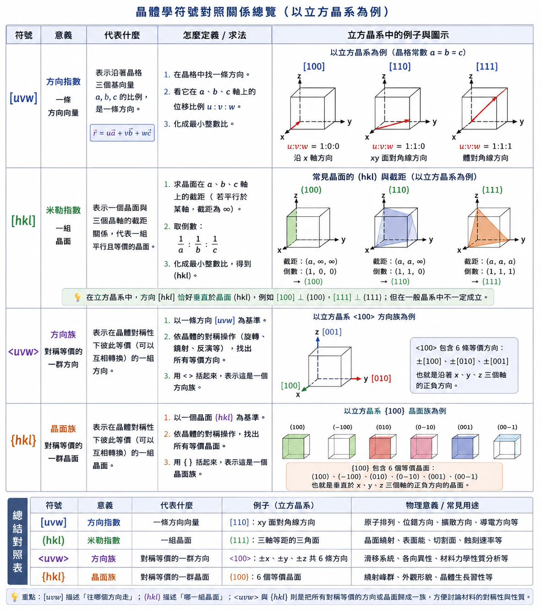
3.11 線密度與面密度（Linear and Planar Densities）
線密度（LD）= 特定方向上每單位長度的等價原子數：$\text{LD} = \text{該方向原子數} / \text{方向向量長度}$。面密度（PD）= 特定晶面上每單位面積的等價原子數：$\text{PD} = \text{該平面原子數} / \text{平面面積}$。例如 FCC $[110]$ 方向沿面對角線含 2 個原子，長度 $4R$ → LD = $1/(2R)$。FCC $(111)$ 平面上含 2 個有效原子。
線密度和面密度直接關係到第 7 章的滑移系統（slip systems）：塑性變形傾向發生在原子密度最高的方向（最短 Burgers 向量，因而 Peierls 應力最低）和原子密度最高的平面（面間距最大，滑移面的「粗糙度」最低）。
計數時只算中心落在線或面上的原子
原子球與幾何線或平面相交，不代表原子中心位於其上。線密度的分子是選定重複線段上原子中心的等價數，端點原子通常由相鄰線段共享；面密度則需建立可平鋪該平面的二維重複單元，再依角、邊與內部位置分配原子。直接看三維球體有多少部分穿過平面，常會高估。
📝 FCC $[110]$ 的線密度
在一條面對角線長度 $a\sqrt2$ 上，兩端角原子各貢獻 $1/2$，中央面心原子貢獻 1，共 2 個原子，因此 $\mathrm{LD}_{[110]}=2/(a\sqrt2)=\sqrt2/a$。利用 $a=2\sqrt2R$ 可改寫為 $1/(2R)$。
高面密度與大面間距不是同一個定義
在簡單立方幾何中，低指數面常同時具有較大面間距與較高面密度，但兩者一個描述相鄰平行面的距離，一個描述單一面上的原子數／面積，不能互相當成公式。對有基底的複雜晶體，某些幾何晶面甚至可能因結構因子而無繞射峰。
面密度會影響表面能、吸附、成長與滑移，但不是唯一因素。不同元素終止的陶瓷表面可能有不同電荷與化學反應性；重構也會改變最外層排列。因此由體相面密度預測表面行為時，還需考慮表面化學與鬆弛。
3.12 最密堆積結構（Close-Packed Crystal Structures）
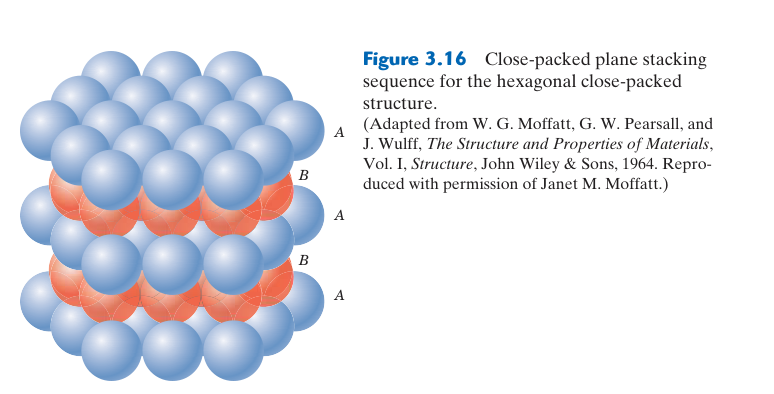
你可能已經注意到一個奇怪的現象：FCC 和 HCP 的原子堆積因子都是 0.74——等徑硬球在三維空間中的理論最大堆積密度（Kepler 猜想，1611 年提出，1998 年由 Hales 完成證明）。兩者堆得一樣密，但 FCC 金屬（鋁、銅、金）可以輕鬆沖壓成飲料罐，HCP 金屬（鎂、鋅、鈦）在室溫下卻難以成形。同樣的密度，完全不同的塑性——這節要回答的就是「為什麼」。
答案藏在原子層的堆疊順序裡。
從一層球開始——逐層建構最密堆積
想像把一堆等大小的彈珠倒進盒子。它們會自動排列成怎樣的圖案？
第一層（A 層）：每顆球周圍被 6 顆球包圍，形成六方對稱排列。這是最密排單層的唯一方式——平面上每顆球佔據的「勢力範圍」最小。
第二層（B 層）：把第二層球放到第一層的凹槽上。但注意——第一層的球之間有兩組凹槽（想像三顆相鄰球形成的三角形凹陷，三角形可以朝上或朝下）。第二層只能選擇其中一組。不管選哪組，結果都是相同的排列（只是水平位移不同），我們稱它為 B 位置。
到目前為止，每顆球的上方和下方各有一個「鄰層」，情況還算單純。
關鍵的第三層——兩種選擇，兩種命運：
| 第三層放在… | 堆疊序列 | 形成的結構 | 週期 |
|---|---|---|---|
| C 位置（與 A 層錯開的另一組凹槽） | ABC ABC ABC… | FCC（面心立方） | 3 層一循環 |
| A 位置（回到第一層的正上方） | AB AB AB… | HCP（六方最密堆積） | 2 層一循環 |
就是這一個決定——第三層放在 C 還是 A——定義了金屬是 FCC 還是 HCP。兩者的第一配位殼層（最近鄰 12 顆原子）完全相同，差異要到第二近鄰和更遠的原子才能察覺。用眼睛看局部，兩者一模一樣；看長程週期，一個是 ABC、一個是 AB——而這個長程差異，決定了材料能開動多少組滑移系統。
堆疊順序的物理後果——不只是「排列不同」
ABC 和 AB 的差別，最直接的後果體現在滑移系統的數量上（詳細推導見下方滑移系統專題）。這裡只說結論：
💡 FCC vs HCP：同樣密度，不同命運（點擊展開）
· FCC（ABCABC…）：$\{111\}$ 密排面有 4 個等價取向 × 每面 3 個 $\langle 110 \rangle$ 方向 = 12 個滑移系統。滿足多晶均勻變形所需的 ≥ 5 個獨立系統 → 鋁、銅、金、銀室溫延展性極佳。
· HCP（ABAB…）：基底面 $(0001)$ 只有 1 個取向 × 面上 3 個 $\langle 11\bar{2}0 \rangle$ 方向 = 3 個基底滑移系統。遠低於 5 個的最低要求 → 鎂、鋅、鈦室溫難以成形，加工需加熱或依賴孿生輔助。
這就是為什麼你的鋁箔可以揉成團，但鎂合金筆電外殼是壓鑄而不是沖壓出來的。
同一個 APF，不同的堆疊順序，決定了完全不同的工程應用範疇。這也是為什麼「合金設計」中，控制堆疊錯能（stacking fault energy）可以調控加工硬化行為——本質上就是在調控材料內部 ABC 和 AB 的「偏好程度」。
未被佔據的凹槽——間隙位置的來源
回顧第二層的擺放：第一層有兩組凹槽，第二層只佔了其中一組。那另一組凹槽在三維堆疊後會變成什麼？
它們成為晶體中的間隙（interstitial sites）——夾在密排原子之間的空隙。根據周圍原子的排列方式，間隙分為兩種：
- 四面體間隙（tetrahedral）：由 4 顆原子圍成的正四面體空間。對 $N$ 個密排母原子，約有 $2N$ 個。
- 八面體間隙（octahedral）：由 6 顆原子圍成的正八面體空間。約有 $N$ 個。
這些間隙不是「瑕疵」——它們是晶體結構中與生俱來的幾何空間。碳、氮、氫等小原子就是住進這些間隙，成為間隙固溶體。FCC 的八面體間隙較大，因此 $\gamma$-Fe（FCC，沃斯田鐵）能溶解 ~2.14 wt% 的碳；BCC 的 $\alpha$-Fe 的間隙雖多但每個都更小，室溫下幾乎不能溶碳（< 0.005 wt%）。沒有這個差異，就沒有鋼的淬火硬化。
堆疊順序的「錯誤」——堆疊錯與孿晶
真實晶體不會永遠完美。如果 FCC 的 ABCABC 序列中局部出錯，例如變成 ABCABABC——中間悄悄夾了一段 AB（HCP 類型）——這就是堆疊錯（stacking fault）。
堆疊錯的重要性在於：它是一種面缺陷，能量高低直接影響差排的行為。當堆疊錯能低時，一個完整的差排傾向分解成兩個部分差排（partial dislocations），中間夾著一片堆疊錯區域。這個區域越寬，差排越難進行交叉滑移（cross-slip）——材料因此加工硬化更快、更不易動態回復。這解釋了為什麼：
- 鋁（高堆疊錯能）→ 容易交叉滑移 → 容易動態回復 → 熱加工容易
- 銅、黃銅（低堆疊錯能）→ 差排分解寬 → 不易交叉滑移 → 加工硬化率高
- 不銹鋼（極低堆疊錯能）→ 傾向形成大量形變孿晶（TWIP 效應）
從另一個角度看，孿晶（twin）也可以理解為堆疊序列的鏡像對稱——例如 FCC 中 ABCABC 變成 ABCBA——形成一個以中間層為鏡面的對稱結構。當一般滑移難以啟動時（如 HCP 金屬室溫），孿生成為額外的變形機制。同一批密排層，換個堆疊邏輯，就從「幫助滑移」變成「阻礙滑移」再變成「替代變形路徑」。
刻意改變堆疊週期——多型
如果堆疊錯是「不小心的錯誤」，多型（polytype）就是「刻意的長週期排列」。同一種化學成分的基本層，以不同的重複序列堆疊——例如 SiC 有超過 200 種 polytype：
- 3C-SiC：ABC 堆疊（立方，對應閃鋅礦結構）
- 4H-SiC：ABCB 堆疊（六方，4 層重複）
- 6H-SiC：ABCACB 堆疊（六方，6 層重複）
每一種 polytype 的局部鍵結（Si–C 四面體）幾乎相同，但長程週期不同，導致能帶結構改變——不同 polytype 的能隙從 2.4 eV 到 3.3 eV 不等。因此 SiC 功率元件選擇哪種 polytype，直接決定其耐壓與導通特性。這再次證明：局部排列相同 ≠ 整體性質相同——只比較最近鄰是不夠的，長程堆疊同樣關鍵。
最密堆積不只是「把球堆得緊」的幾何遊戲。同一批密排層，因為第三層的選擇（C 或 A），分出了 FCC 和 HCP 兩條路——兩者密度相同，卻因為長程堆疊順序不同，在滑移系統數量、間隙化學、缺陷行為、甚至電子性質上走向完全不同的方向。
記住一句話：局部環境決定原子跟誰鍵結，長程堆疊決定晶體能做什麼。
🧪 專題：滑移系統的推導邏輯
晶體最容易沿著原子最密排的方向，在原子最密排或阻力最低的晶面上滑動。滑移系統 = 滑移面 + 滑移方向，例如 FCC 的 $\{111\}\langle 110 \rangle$ 表示：在所有等價的 $\{111\}$ 晶面上，沿著所有等價的 $\langle 110 \rangle$ 方向滑移。這不是背出來的，而是從晶體幾何推導出來的。
1. 為什麼選最密排方向與最密排面？
金屬塑性變形主要靠差排（dislocation）移動。差排移動一步的距離就是 Burgers vector 的長度 $b$，而差排的能量約與 $b^2$ 成正比——$b$ 越短，差排越容易移動。最密排方向上的原子間距最短，Burgers vector 最小，因此滑移方向總是選最密排方向。
滑移面則是差排移動的「跑道」。原子排列越緊密的晶面，面間距越大、鍵結重排越容易，差排在上面滑動的阻力（Peierls 應力）越低——因此滑移面優先選最密排面。FCC 這個規則非常準，BCC 和 HCP 則需額外考量差排核心結構與溫度效應。
2. 推導滑移系統的四步驟
| 步驟 | 要問的問題 | 結果 |
|---|---|---|
| 1 | 這個晶體有哪些高原子密度晶面？ | 候選滑移面 |
| 2 | 這些晶面上有哪些高原子密度方向？ | 候選滑移方向 |
| 3 | 這些方向是否真的位於該晶面內？（立方晶系：$hu + kv + lw = 0$） | 合法滑移系統 |
| 4 | 需要多少剪應力才能啟動？（Schmid 定律：$\tau_R = \sigma \cos\phi \cos\lambda \ge \tau_{\text{CRSS}}$） | 實際活化系統 |
不是任意 $\{hkl\}$ 面都能搭配任意 $\langle uvw \rangle$ 方向。立方晶系中，方向 $[uvw]$ 是否在平面 $(hkl)$ 內？檢查 $hu + kv + lw = 0$ 即可。
例如 FCC 的 $(111)[1\bar{1}0]$：$h=1,k=1,l=1$，$u=1,v=-1,w=0$ → $1(1)+1(-1)+1(0)=0$ ✓。所以 $(111)[1\bar{1}0]$ 是合法滑移系統。
3. FCC：{111}⟨110⟩——最經典的推導
滑移面：FCC 的最密排面是 $\{111\}$（八面體面）。$\{111\}$ 族有 4 個等價面：$(111)$、$(\bar{1}11)$、$(1\bar{1}1)$、$(11\bar{1})$。
滑移方向：每個 $\{111\}$ 面上有 3 個 $\langle 110 \rangle$ 密排方向（面對角線）。$\langle 110 \rangle$ 族共 6 個獨立方向（正反合併計）。
系統總數：$4$ 面 $\times 3$ 方向/面 $= 12$ 個滑移系統。滿足 von Mises 準則（多晶均勻變形需 $\ge 5$ 個獨立系統），因此鋁、銅、鎳、金、銀等 FCC 金屬延展性極佳。
4. BCC：⟨111⟩ 方向 + 多組滑移面
BCC 沒有真正的密排面（APF = 0.68，低於 FCC/HCP 的 0.74），因此滑移面的選擇不如 FCC 單純。
滑移方向：BCC 的最密排方向是 $\langle 111 \rangle$（體對角線），這點很穩定。$\langle 111 \rangle$ 族有 4 個方向（正反合併）。
滑移面：常見包括 $\{110\}$、$\{112\}$、$\{123\}$，組合後可達 48 個滑移系統。但 BCC 的螺旋差排核心結構複雜、Peierls 應力高，低溫下實際可啟動的系統遠少於幾何可能——這是 $\alpha$-Fe、W、Mo、Cr 等 BCC 金屬在低溫變脆的主因。
5. HCP：基底滑移——系統少，塑性受限
HCP 的最密排面是基底面 $(0001)$，面上的最密排方向是 $\langle 11\bar{2}0 \rangle$（底面的三條 $a$ 軸方向）。
基底滑移系統：$(0001)\langle 11\bar{2}0 \rangle$，僅 3 個獨立滑移系統——遠低於 von Mises 準則要求的 5 個。這就是鎂、鋅、鈦等 HCP 金屬室溫難以成形、加工時常需加熱的原因。額外變形常依賴孿生（deformation twinning）或啟動非基底滑移系統（需更高應力）。
6. 常見結構滑移系統總覽
| 結構 | 滑移面 | 滑移方向 | 代表系統 | 系統數 | 特性 |
|---|---|---|---|---|---|
| FCC | $\{111\}$ | $\langle 110 \rangle$ | $\{111\}\langle 110 \rangle$ | 12 | 密排面＋密排方向，延性佳 |
| BCC | $\{110\},\{112\},\{123\}$ | $\langle 111 \rangle$ | $\{110\}\langle 111 \rangle$ 等 | 12–48 | 無真正密排面，受溫度影響大 |
| HCP | $(0001)$ | $\langle 11\bar{2}0 \rangle$ | $(0001)\langle 11\bar{2}0 \rangle$ | 3 | 基底滑移為主，塑性方向性強 |
| Diamond | $\{111\}$ | $\langle 110 \rangle$ | $\{111\}\langle 110 \rangle$ | 12 | 共價鍵方向性強，室溫難滑移 |
滑移系統不是死背的——它是「最密排面」和「最短 Burgers vector 方向」的幾何組合。FCC 的 $\{111\}\langle 110 \rangle$ 之所以是 12 個，是因為 4 個等價面 × 每面 3 個密排方向。真正啟動哪些系統，還需要 Schmid 定律來判斷哪個方向的解析剪應力先達到臨界值。
3.13 單晶（Single Crystals）
單晶中，整個試片的原子排列沿單一連續的晶體學方向，沒有晶界中斷。人工生長方法包括 Czochralski 法（用於生長大尺寸矽單晶——將晶種浸入熔融矽中，緩慢旋轉並向上提拉）。應用：燃氣渦輪單晶葉片（消除晶界以防止高溫潛變）、半導體晶圓、壓電石英振盪器。
單晶不等於沒有缺陷
單晶只表示沒有高角度晶界把試片分成不同取向晶粒，仍可含空位、差排、溶質、堆疊錯、亞晶界與成長條紋。半導體要求極低差排密度與高純度，是因少量缺陷就可能形成漏電與載子復合中心；渦輪葉片則容許某些缺陷，但必須控制鑄造孔隙、偏析與晶體取向。
晶體生長需要控制熱與物質傳輸
Czochralski 法中，晶種取向決定長成晶棒的晶向；拉速、旋轉、溫度梯度與熔體對流控制直徑及成分均勻性。冷卻太快可能引入熱應力與差排，太慢則降低產率並增加污染機會。區熔法可利用雜質在固、液相間分配差異，把雜質推向晶棒一端以提高純度。
方向凝固與選晶器可讓鑄件從多晶柱狀晶逐步只留下單一晶粒，製造單晶渦輪葉片。葉片常讓低彈性或抗潛變有利的晶向對準主應力，但取向偏差會改變模數與疲勞行為，因此需要 XRD 或背向散射技術驗證。
何時值得付出單晶成本？
單晶消除晶界，可避免高溫晶界滑動、晶界擴散與局部腐蝕，也能利用方向性電子、光學或壓電性。不過生長速度慢、尺寸受限且性質各向異性強，接合後還可能重新引入界面。只有當晶界確實是主要瓶頸，或功能必須依賴特定晶向時，單晶成本才合理。
3.14 多晶材料（Polycrystalline Materials）
大多數工程金屬和陶瓷是多晶——由大量微小晶粒（尺寸 μm–mm）組成，每粒方向隨機。晶界是原子排列紊亂的過渡區域，厚度僅幾個原子間距。晶界阻礙差排運動（強化效應，Ch7）、作為快擴散路徑（Ch5），也常是優先腐蝕位置。
多晶如何形成？
液體冷卻或固體相變時，許多晶核在不同位置與取向形成並長大。相鄰晶體相遇後無法保持同一週期排列，留下晶界。晶核數量多而成長受限時得到細晶；晶核少、成長時間長則得到粗晶。溫度梯度與凝固方向還會產生等軸晶、柱狀晶或方向性組織。
晶粒不是固定不變。加熱可使晶界遷移，較大晶粒吞併較小晶粒以降低總晶界能；塑性變形後退火則可發生再結晶，形成新的低差排晶粒。製程透過成核、成長與晶界移動控制最終晶粒尺寸。
晶界的結構與能量
低角度晶界可視為規則排列的差排陣列，取向差增大後，差排核心重疊成較無序的高角度晶界。晶界原子配位不完整、自由體積較大，能量高於晶內，因此容易吸附溶質、提供快速擴散路徑或成為第二相優先成核位置。
三個晶粒相遇形成三叉點，更多界面與應力集中使其在晶粒成長、腐蝕與高溫破壞中格外重要。多晶材料不是「單晶性質的簡單平均」；晶界本身是一個體積分率隨晶粒變細而增加的結構成分。
隨機取向與織構
晶粒數多且取向真正隨機時，方向性性質可在巨觀上近似平均；若凝固、軋延、擠製或再結晶使某些取向較常出現，就形成織構。只看一張顯微照片通常無法判斷三維取向分布，需要 XRD 極圖或 EBSD 量測。
3.15 各向異性（Anisotropy）
單晶銅的彈性模數在 $[100]$ 方向為 66.7 GPa，在 $[111]$ 方向為 191.1 GPa——幾乎差三倍。多晶材料通常表現為準各向同性（隨機取向平均化各向異性效應），但經過軋延或拉伸加工後，晶粒產生優選取向（織構, texture），重新變得各向異性。深沖鋼板的製耳效應（earing）是織構的經典工程後果。
變壓器鋼（矽鋼）刻意製造強烈 Goss 織構（$\{110\}\langle 001\rangle$），使易磁化方向對齊軋延方向，最小化磁滯損失，提高能源效率。織構是材料工程師可以主動設計和利用的微觀結構特徵。
各向異性需要張量描述
應力、應變、熱流與電場都有方向；在各向異性材料中，輸入方向與輸出方向未必平行。例如某方向溫度梯度可同時引起多方向熱流，需用導熱率張量描述。彈性關係更涉及四階張量；晶體對稱性會讓許多分量相等或為零，降低獨立常數數量。
「某方向模數」只有在指定載荷與橫向邊界條件後才完整。單晶拉伸時還會有 Poisson 收縮與剪切耦合；把各向同性公式直接套用於任意晶向可能產生錯誤。工程軟體中的單晶模型需輸入完整彈性常數，再依座標轉換到零件方向。
各向異性的三個來源
- 晶格各向異性：不同方向原子間距、配位與鍵結不同。
- 微觀結構各向異性：晶粒織構、拉長晶粒、層狀相或方向性孔隙。
- 巨觀結構各向異性：纖維、鋪層、加工流線與幾何造成不同方向承載路徑。
三者可能疊加，也可能互相抵消。多晶隨機取向可平均晶格各向異性，但若晶粒被軋延拉長或第二相形成帶狀，即使晶向分布近似隨機，力學與破裂仍可能有方向差異。
如何量測與呈現方向性
可在不同方向切取試片比較拉伸、熱膨脹或導電率；XRD 極圖與 EBSD 取向分布函數可量化織構。報告「平行軋延方向」與「橫向」仍不夠時，應使用樣品座標 RD、TD、ND 並說明晶向分布。方向資料若被平均成單一數值，可能掩蓋最危險方向。
3.16 X 光繞射（X-Ray Diffraction）
Bragg 定律是 X 光繞射的物理基礎：當兩束從相鄰晶面（間距 $d$）反射的 X 光的路徑差 $2d\sin\theta$ 等於波長 $\lambda$ 的整數倍時，產生建設性干涉——繞射峰。
繞射峰的系統消光規則可用來判斷晶體結構：BCC——只有 $h+k+l$ 為偶數才有峰（奇數時體心原子散射與頂點反相抵消）；FCC——$h,k,l$ 必須全奇或全偶。因此 BCC 第一峰為 (110)，FCC 第一峰為 (111)。
📝 範例 3.4：BCC 鐵的第一個繞射峰
題目：BCC 鐵（$a=0.2866$ nm），使用 Cu Kα（$\lambda = 0.1542$ nm）。求第一個繞射峰的 $2\theta$ 角。
解：BCC 第一個允許峰為 (110)。$d_{110} = a/\sqrt{2} = 0.2027$ nm。$\sin\theta = \lambda/(2d_{110}) = 0.1542/(0.4054) = 0.380$。$\theta = 22.3°$ → $2\theta = 44.7°$（繞射儀實際測量值）。
峰位、強度與寬度提供不同資訊
峰位主要由晶面間距與波長決定，可求晶格參數與應變；相對強度由原子散射因子、晶胞內位置、相含量與織構影響；峰寬則同時受儀器解析度、微小晶粒與微應變影響。不能只用一個峰的位置判斷所有結構，也不能把峰高直接等同於相含量。
結構因子把晶胞內各原子的散射振幅與相位相加。某些 $(hkl)$ 即使滿足 Bragg 幾何，也會因不同位置的波互相抵消而系統消光。BCC 與 FCC 的選擇規則正是簡單結構因子結果；多原子晶體的消光與強度可進一步提供原子占位資訊。
粉末繞射儀實際量的是 $2\theta$
粉末含大量隨機取向微晶，總有一部分晶粒的某族晶面恰好滿足 Bragg 條件；這些晶粒形成繞射圓錐，探測器掃描角度得到一維圖譜。若樣品有強織構，滿足條件的晶粒比例不再隨機，峰強會偏離標準粉末圖譜。
樣品高度、零點、透明度與波長選擇會造成峰位系統誤差；背景、螢光與非晶成分影響弱峰辨識。精密晶格常數不應只用單一低角峰，通常需校正儀器並同時擬合多個峰。
Scherrer 公式的能力與限制
晶粒很小時，有限相干繞射長度使峰展寬，可用 $D=K\lambda/(\beta\cos\theta)$ 估算晶粒尺寸，其中 $\beta$ 必須扣除儀器展寬並以弧度表示。這裡的 $D$ 是相干繞射域，可能小於顯微鏡看到的顆粒，因一顆顆粒內可含多個亞晶或應變區。
微應變也會使不同區域晶面間距略有差異而展寬。若不分離尺寸與應變貢獻，Scherrer 結果只能視為近似。Williamson–Hall 或完整圖譜精修可利用角度依賴分離部分效應，但仍依模型與峰形假設。
相鑑定需要整組圖譜
相鑑定應比較多個峰的位置與相對強度，排除峰重疊並確認化學合理性。少量相可能低於偵測限，非晶相只形成寬廣背景；兩相晶格相近時峰會重疊。XRD 擅長提供平均晶體資訊，但對局部缺陷與極少量奈米相常需配合 TEM、拉曼或化學分析。
3.17 非晶固體（Noncrystalline Solids）
非晶材料（玻璃、多數高分子、金屬玻璃）沒有晶界和差排。XRD 無尖銳繞射峰——只有寬廣的繞射包（diffuse halo），反映缺乏週期性結構。金屬玻璃透過極快速冷卻（>10⁶ °C/s）凍結液態無序排列，具有極高強度和優異軟磁性（用於變壓器鐵芯）。
非晶不等於完全隨機
玻璃缺乏跨越長距離重複的平移週期，但最近鄰鍵長、配位數與局部多面體仍受化學鍵限制，稱為短程有序。XRD 寬峰的位置反映最常見原子間距；配對分布函數、EXAFS 與散射技術可進一步量測不同距離的局部相關。
晶體在固定方向與距離重複同一結構，非晶材料的局部單元則以多種方式連接，相關性隨距離快速消失。因此不能用一個小晶胞週期重建整個玻璃，只能用統計分布或大型原子模型描述。
玻璃形成是熱力學與動力學的競賽
低於熔點時晶體通常具有較低自由能，但結晶需要成核與原子重新排列。若冷卻快到原子來不及組織，黏度持續上升，液態結構會在玻璃轉變區間被動力學凍結。$T_g$ 不是像平衡熔點那樣唯一固定值，會隨冷卻速率與量測時間改變。
玻璃形成能力與成分複雜度、原子尺寸差、混合熱及晶體結構競爭有關。早期金屬玻璃確實需極高冷卻速率，只能製成薄帶；某些多元合金能抑制結晶，可用較低冷卻速率製成毫米到公分尺度的塊狀金屬玻璃。不能把 $10^6$ °C/s 當成所有金屬玻璃的固定門檻。
非晶結構的優勢與限制
沒有晶界與晶格差排，使金屬玻璃可達高彈性極限、高強度、良好耐蝕與低磁滯；但塑性常集中在狹窄剪切帶，一旦局部軟化便可能快速失效，巨觀拉伸延性有限。玻璃與非晶高分子的等向性較好，卻仍可能因製程取向、殘留應力或相分離而呈方向差異。
非晶材料加熱到 $T_g$ 以上會顯著軟化，進一步升溫可能結晶。這既是失效風險，也是熱塑成形與奈米晶材料製造機會。差示掃描量熱可觀察玻璃轉變、結晶放熱與熔融吸熱，配合 XRD 判斷加熱後是否產生晶相。
晶體與非晶可以共存
許多高分子是半結晶材料，含有有序片晶與非晶鏈區；玻璃陶瓷由玻璃基材受控析出細晶；奈米晶合金也可讓晶粒嵌在非晶基質中。此時性質取決於兩相比例、尺寸、連通性與界面，不能只貼上「晶體」或「非晶」單一標籤。
補強專題：由粉末 XRD 峰值辨識晶體結構
對立方晶系，Bragg 定律與 $d_{hkl}=a/\sqrt{h^2+k^2+l^2}$ 結合後得到：
📝 完整例題：未知立方金屬的結構與晶格常數
使用 Cu Kα，$\lambda=0.1542$ nm，前三個峰位於 $2\theta=44.7^\circ,\ 65.0^\circ,\ 82.3^\circ$。
計算得 $\sin^2\theta\approx0.144,\ 0.289,\ 0.433$；除以最小值後約為 $1:2:3$。BCC 的前三個允許反射為 $(110),(200),(211)$，其平方和為 $2,4,6$，所以此金屬為 BCC。
以第一峰 $(110)$ 計算：$d=\lambda/(2\sin22.35^\circ)\approx0.2027$ nm；$a=d\sqrt{2}\approx0.2867$ nm，與 α-Fe 相符。
本章摘要
- 晶體結構是原子排列的幾何語言：晶胞參數 $(a,b,c,\alpha,\beta,\gamma)$ 定義七晶系、14 種 Bravais 晶格。
- 三種金屬結構各有數學關係：FCC $a=2R\sqrt{2}$, BCC $a=4R/\sqrt{3}$, HCP $c/a=1.633$。APF 分別為 0.74, 0.68, 0.74。
- Miller 指數是晶體學的通用語言：$(hkl)$ 標記晶面（倒截距法），$[uvw]$ 標記晶向。立方晶系中 $d_{hkl}=a/\sqrt{h^2+k^2+l^2}$。
- 結構決定性質：FCC 12 個滑移系統 → 延性；HCP 3 個 → 脆性；BCC 低溫延脆轉變。
- Bragg 定律使我們能「看見」原子：$n\lambda=2d\sin\theta$，繞射峰規則可區分 BCC/FCC 結構。
| 概念 | 公式 | 直覺 |
|---|---|---|
| 密度 | $\rho = nA/(V_C N_A)$ | 一個晶胞的質量除以體積 |
| 面間距（立方） | $d_{hkl} = a/\sqrt{h^2+k^2+l^2}$ | 低指數面間距大 = 密度高 |
| Bragg 定律 | $n\lambda = 2d\sin\theta$ | 路徑差 = 波長整數倍 → 建設性干涉 |
| APF (FCC) | $\pi/(3\sqrt{2}) \approx 0.74$ | 74% 體積被原子佔據 |
| APF (BCC) | $\pi\sqrt{3}/8 \approx 0.68$ | 68% 體積被原子佔據 |
⚠️ 初學者常見錯誤
錯——頂點原子被 8 個晶胞共用（各 $1/8$），面心被 2 個共用（各 $1/2$）。$n = 8\times\frac{1}{8} + 6\times\frac{1}{2} = 4$。晶胞角落的原子「不完全屬於」這個晶胞。
錯——$d_{hkl} \propto 1/\sqrt{h^2+k^2+l^2}$，指數愈大間距愈小。低指數面（{100}, {110}, {111}）才是最重要的面。
錯——APF 都是 0.74，但堆疊順序（ABC vs AB）導致滑移系統數量完全不同。這是「結構決定性質」的經典範例。
錯——僅在立方晶系成立。正方、斜方等非立方晶系中方向通常不垂直於同名平面。
錯——晶胞體積必須轉換為 cm³（1 nm = 10⁻⁷ cm, 1 nm³ = 10⁻²¹ cm³），否則密度數量級完全錯誤。
📝 概念診斷題
- BCC 鐵的原子半徑 $R=0.1241$ nm。計算 BCC 單位晶胞的晶格常數 $a$ 和原子堆積因子 APF。
- FCC 結構中 {111} 平面的面密度高於 {100} 平面。從鍵結的角度，為什麼滑移優先發生在面密度最高的平面上？
- 一個立方晶系的平面截距為 $(1, \infty, \frac{1}{2})$（以晶格常數為單位）。求這個平面的 Miller 指數。
- 為什麼大多數金屬在室溫下是 FCC 或 BCC，而不是簡單立方（SC）？提示：計算 SC 的 APF 並與 FCC/BCC 比較。
- XRD 實驗中 BCC 鐵的 (110) 平面產生繞射峰在 $2\theta = 44.7°$（Cu Kα，$\lambda = 0.1542$ nm）。計算 (110) 的平面間距 $d_{110}$ 和晶格常數 $a$。
📚 延伸資源
- Cullity, B. D. & Stock, S. R., Elements of X-Ray Diffraction：XRD 的權威教科書，深入討論繞射理論與實驗方法
- Hammond, C., The Basics of Crystallography and Diffraction：晶體學入門經典，適合建立幾何直覺
- YouTube: "Miller Indices" by Taylor Sparks：視覺化解釋晶面和晶向的標記方法
- 下一章預告：第 4 章：固體中的缺陷——真實晶體中的空位、差排和晶界如何賦予材料塑性與可調控的性質
🧪 推導、假設與章末診斷
方程式使用契約
- $a = 2R\sqrt{2}$（FCC）和 $a = 4R/\sqrt{3}$（BCC）假定原子為剛性球體且沿面對角線／體對角線接觸。真實原子有輕微的壓縮性，且熱振動會改變有效半徑。
- $d_{hkl} = a/\sqrt{h^2+k^2+l^2}$ 僅適用於立方晶系。非立方晶系的面間距公式包含晶格參數 $a,b,c$ 和軸間角。
- Bragg 定律的簡化形式 $n\lambda = 2d\sin\theta$ 假設晶面為完美反射面、X 光單色、晶體無吸收。實際 XRD 分析需考慮 Lorentz 偏振因子和吸收校正。
代表推導：FCC 堆積因子的計算
- FCC 晶胞含 4 個原子。每個原子體積 $= \frac{4}{3}\pi R^3$。總原子體積 $= \frac{16}{3}\pi R^3$。
- 晶胞邊長與原子半徑關係：沿面對角線 $4R = a\sqrt{2}$ ⇒ $a = 2R\sqrt{2}$。
- 晶胞體積 $V_C = a^3 = (2R\sqrt{2})^3 = 16\sqrt{2}R^3$。
- APF = $\frac{\frac{16}{3}\pi R^3}{16\sqrt{2}R^3} = \frac{\pi}{3\sqrt{2}}$。代入 $\pi \approx 3.1416$ ⇒ APF $\approx 0.7405$。
章末概念診斷
為什麼鐵在 912°C 時從 BCC（疏）變成 FCC（密）？
在高溫下，原子熱振動幅度大。FCC 的更密堆積（APF 0.74 > 0.68）和更高的配位數（12 > 8）提供更強的原子間鍵結平均強度。雖然 BCC 具有更高的振動熵（疏結構允許更大的振動幅度），但在中等高溫範圍內 FCC 的較低焓（更強的鍵結）勝出。在非常高溫（>1394°C），BCC 的高熵優勢重新佔上風——鐵又變回 BCC（δ-鐵）。
如果 FCC $(111)$ 是最密面，為什麼滑移不沿 $(100)$？
滑移面必須同時滿足兩個條件：面間距大（面密度高——使滑移阻力低）和面上有合適的滑移方向。FCC 的 $(111)$ 面密度最高，且包含三個 $\langle 110 \rangle$ 滑移方向（最短 Burgers 向量）。$(100)$ 面密度較低，且其上的滑移方向 Burgers 向量較長——需要更高的 Peierls 應力。
延伸計算練習
完成上述診斷後，嘗試：在不查公式的情況下，推導 BCC 的 APF。然後計算鉬（Mo, BCC, $R=0.136$ nm, $A=95.94$ g/mol）的理論密度，並與實驗值 10.22 g/cm³ 比較。更多含數值與解答的題目見習題頁。